<!doctype html>
<html lang="en">
<head>
  <meta charset="utf-8">
  <meta name="viewport" content="width=device-width, initial-scale=1">
  <title>arxiv digest — 2026-10-10</title>
  <style>
:root {
  --bg: #ffffff;
  --fg: #1f2328;
  --muted: #59636e;
  --border: #d0d7de;
  --card: #f6f8fa;
  --link: #0969da;
}
body {
  max-width: 980px;
  margin: 0 auto;
  padding: 2rem 1rem 5rem;
  font-family: -apple-system, BlinkMacSystemFont, "Segoe UI", Helvetica, Arial, sans-serif;
  line-height: 1.55;
  color: var(--fg);
  background: var(--bg);
}
a { color: var(--link); }
img { max-width: 100%; height: auto; }
pre, code { background: var(--card); border-radius: 6px; }
pre { padding: 1rem; overflow-x: auto; }
blockquote { border-left: 4px solid var(--border); padding-left: 1rem; color: var(--muted); }
details { margin: 0.6rem 0; }
summary { cursor: pointer; font-weight: 600; }
.paper-figures-scroll {
  display: flex;
  gap: 1rem;
  overflow-x: auto;
  overscroll-behavior-x: contain;
  padding: 0.75rem 0.25rem 1rem;
  margin: 1rem 0 1.25rem;
  border-top: 1px solid var(--border);
  border-bottom: 1px solid var(--border);
  scroll-snap-type: x proximity;
}
.paper-figure-card {
  flex: 0 0 min(260px, 72vw);
  scroll-snap-align: start;
  background: var(--card);
  border: 1px solid var(--border);
  border-radius: 12px;
  padding: 0.55rem;
}
.paper-figure-card img {
  display: block;
  width: 100%;
  max-height: 240px;
  object-fit: contain;
  background: white;
  border-radius: 8px;
}
.paper-figure-caption {
  display: block;
  margin-top: 0.5rem;
  color: var(--muted);
  font-size: 0.85rem;
}
.figure-strip-hint {
  color: var(--muted);
  font-size: 0.9rem;
  margin-bottom: -0.3rem;
}
</style>
  <!-- MathJax: renders $...$ inline math and $$...$$ display math, plus
       \(...\) and \[...\]. Loaded from the official CDN; works offline
       once cached. Configured to skip code/pre blocks so arxiv IDs that
       look like dollar amounts don't get mangled. -->
  <script>
    window.MathJax = {
      tex: {
        inlineMath: [['$', '$'], ['\\(', '\\)']],
        displayMath: [['$$', '$$'], ['\\[', '\\]']],
        processEscapes: true,
        processEnvironments: true
      },
      options: {
        skipHtmlTags: ['script', 'noscript', 'style', 'textarea', 'pre', 'code'],
        ignoreHtmlClass: 'tex2jax_ignore',
        processHtmlClass: 'tex2jax_process'
      }
    };
  </script>
  <script id="MathJax-script" async
    src="https://cdn.jsdelivr.net/npm/mathjax@3/es5/tex-chtml.js"></script>
</head>
<body>
<header style="background-color: #333; color: white; padding: 15px; margin-bottom: 20px;">
  <h1 style="margin: 0; font-size: 24px;">
    <a href="https://ochelpan.github.io/arXiv_clean/" style="color: white; text-decoration: none;">Main</a>
  </h1>
</header>

<h1>Daily arXiv Report</h1>

<hr>
<p>
<a href="index.html">← Index</a>
 · <a href="papers_05.html">← Previous</a> · <a href="papers_07.html">Next →</a>
</p>
<hr>

<h2>Papers 101–120</h2>
<p><a id="paper-2610.11995"></a></p>
<h3 id="unitary-accessible-coherence-erasure-distance-exact-qubit-solution-and-a-tight-qutrit-bound"><a href="http://arxiv.org/abs/2610.11995v1">Unitary-accessible coherence-erasure distance: Exact qubit solution and a tight qutrit bound</a></h3>
<p><strong>Authors:</strong> Dong-Ping Xuan, Hua Nan, Zhi-Xi Wang, Shao-Ming Fei<br>
<strong>Type:</strong> theory · <strong>Category:</strong> quantum information and computing · <strong>PDF:</strong> <a href="https://arxiv.org/pdf/2610.11995v1">https://arxiv.org/pdf/2610.11995v1</a><br>
<strong>Analysis basis:</strong> full PDF text, analyzed in chunks
<strong>Topic relevance:</strong> <code>quantum measurements</code> <strong>1/5</strong></p>
<div class="figure-strip-hint">↔ Scroll figures horizontally</div>
<div class="paper-figures-scroll">
<figure class="paper-figure-card">
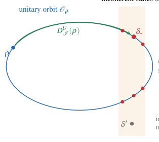
<figcaption class="paper-figure-caption"><b>Fig 1.</b> FIG. 1: Schematic illustration of the unitary coherence-erasure dis- tance DU I(ρ). The unitary orbit Oρ intersects the incoherent set I at the accessible incoherent states Iρ = I ∩Oρ. The optimal target δ∗∈Iρ minimizes the quantum charging distance from ρ, while in- coherent states outside Oρ are not unitarily reachable.</figcaption>
</figure>
<figure class="paper-figure-card">
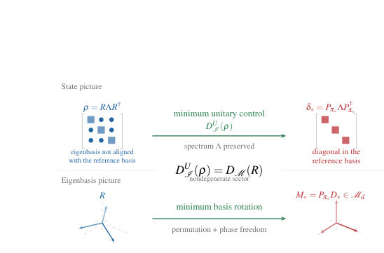
<figcaption class="paper-figure-caption"><b>Fig 2.</b> FIG. 2: Schematic illustration of the eigenbasis reduction of unitary coherence erasure for a nondegenerate state. At the state level, the transformation from ρ = RΛR† to the optimal accessible incoherent state δ∗preserves the spectrum Λ. Equivalently, the problem reduces to rotating the eigenbasis matrix R to the monomial unitary set Md, so that DU I(ρ) = DM(R).</figcaption>
</figure>
<figure class="paper-figure-card">
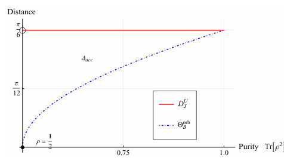
<figcaption class="paper-figure-caption"><b>Fig 3.</b> FIG. 3: Unitary-accessible coherence-erasure distance DU I and orbit- restricted Bures angle Θorb B for the qubit family in Eq. (52), with fixed Bloch direction |rz|/r = 1/2 and varying purity P = Tr ρ2. In the non- degenerate sector, DU I = π/6 is independent of the purity, whereas Θorb B decreases with increasing mixedness. Their separation is the ac- cessibility difference ∆acc. The open circle at P = 1/2 denotes the nondegenerate limit, while the filled point corresponds to the maxi- mally mixed state ρ = I/2, for which both distances vanish.</figcaption>
</figure>
<figure class="paper-figure-card">

<figcaption class="paper-figure-caption"><b>Fig 4.</b> Fig. 3 illustrates these two distances as the purity of the state is varied while the Bloch direction is kept fixed. The two limiting regimes shown in Fig. 3 are particularly instructive. For the pure state endpoint r = 1,</figcaption>
</figure>
<figure class="paper-figure-card">
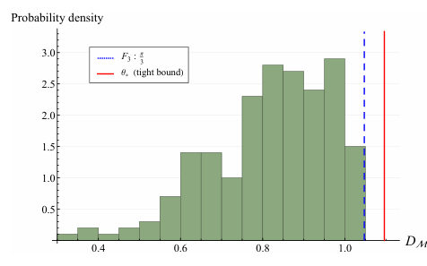
<figcaption class="paper-figure-caption"><b>Fig 5.</b> FIG. 4: Normalized histogram of DM(R) for 200 Haar-random qutrit eigenbases R ∈U(3). The blue dashed line denotes the Fourier-basis value DM(F3) = π/3, while the red solid line marks the tight qutrit bound θ∗= arccos[(2 √</figcaption>
</figure>
</div>

<p><strong>Summary.</strong> This paper introduces the unitary-accessible coherence-erasure distance, a metric measuring the minimum unitary effort to make a quantum state incoherent while keeping its spectrum fixed. The authors derive exact formulas for qubits and establish a tight universal bound for qutrits. This distance has direct operational meaning as the minimum time required for coherence erasure under bounded unitary driving.</p>
<p><strong>Why it may be interesting.</strong> This work provides a rigorous, quantifiable measure of how much 'coherence' must be erased via unitary control, which is fundamental for understanding quantum state preparation and decoherence processes in controlled quantum systems.</p>
<details>
<summary>Detailed structure</summary>
<p><strong>Main problem.</strong> The paper introduces and analyzes the unitary-accessible coherence-erasure distance, $D_{U|I}(
ho)$, which quantifies the minimum unitary control cost to transform a quantum state into an incoherent state while preserving its spectrum.</p>
<p><strong>Main result.</strong> For qutrits, the authors derive a tight universal bound for this distance: $\arccos\left[rac{2\sqrt{2} - 1}{4}
ight]$, and provide an explicit eigenbasis that achieves this bound.</p>
<p><strong>Method.</strong> The analysis involves establishing relationships between this distance, orbit-restricted quantum transport, and the Bures geometry, culminating in a detailed optimization over the monomial unitary group for the qutrit case.</p>
<p><strong>Model / system.</strong> The study concerns general quantum states $
ho$ on a $d$-dimensional Hilbert space, focusing on the dynamics restricted to unitary evolution. The target states are restricted to the intersection of the unitary orbit and the set of incoherent states ($I_
ho$).</p>
<p><strong>Key observables.</strong> Unitary-accessible coherence-erasure distance ($D_{U|I}(
ho)$), coherence-erasure cost, and the minimum unitary-control cost.</p>
<p><strong>Important parameters / regimes.</strong> Qubit and qutrit dimensions ($d=2, 3$), the specific bound $\arccos[(2\sqrt{2}-1)/4]$, and the state's eigenbasis orientation.</p>
<p><strong>Assumptions / limitations.</strong> The analysis relies on restricting the target state set to $I_
ho = I \cap O_
ho$, and for the qutrit case, it involves extensive optimization over the monomial unitary group $M_3$.</p>
<p><strong>Figures summary.</strong> Figures illustrate the restriction of the optimization to $I_
ho$ and show the reduction of the distance calculation to an optimization problem over the eigenbasis relative to the monomial unitary group.</p>
<p><strong>Paper structure.</strong> The paper first defines the distance and relates it to existing metrics. It derives exact results for qubits. For qutrits, the problem is reduced to an optimization over the monomial unitary group, leading to a systematic, constraint-based proof to establish the tight universal bound.</p>
</details>
<details>
<summary>Abstract</summary>
<p>We introduce the unitary-accessible coherence-erasure distance, which measures the minimum unitary-control cost required to transform a quantum state into an incoherent state without changing its spectrum. The target states are restricted to incoherent states on the same unitary orbit, leading to a geometry different from conventional state-space proximity. We establish inequalities relating orbit-restricted quantum transport, Bures geometry, and the unitary-control distance. These quantities coincide for pure states but can differ for mixed states. For qubits, we derive an exact expression and show that, in the nondegenerate case, the coherence-erasure cost depends on the eigenbasis orientation rather than on the eigenvalues. For nondegenerate qutrits, we reduce the problem to an optimization over the monomial unitary group. We derive the tight universal bound $\arccos[(2\sqrt2-1)/4]$ and construct an explicit eigenbasis that attains it. The resulting distance also determines the minimum coherence-erasure time under bounded unitary driving, giving it a direct operational meaning.</p>
</details>
<p><sub><a href="#top">↑ back to top</a></sub></p>
<h2 id="other-papers-32">Other papers (32)</h2>
<p><em>Papers from primary archives without highlighted authors or any topic match. Click to expand.</em></p>
<details>
<summary>Show other papers</summary>

<p><a id="paper-2610.11079"></a></p>
<h3 id="2-fast-2-surgery-fast-surgery-on-qldpc-codes-with-math946math-space-overhead"><a href="http://arxiv.org/abs/2610.11079v1">2 Fast 2 Surgery: Fast surgery on QLDPC codes with $\tilde{O}(n(k + d))$ space overhead</a></h3>
<p><strong>Authors:</strong> Nouédyn Baspin<br>
<strong>Type:</strong> theory · <strong>Category:</strong> quantum information and computing · <strong>PDF:</strong> <a href="https://arxiv.org/pdf/2610.11079v1">https://arxiv.org/pdf/2610.11079v1</a><br>
<strong>Analysis basis:</strong> full PDF text, analyzed in chunks</p>
<div class="figure-strip-hint">↔ Scroll figures horizontally</div>
<div class="paper-figures-scroll">
<figure class="paper-figure-card">
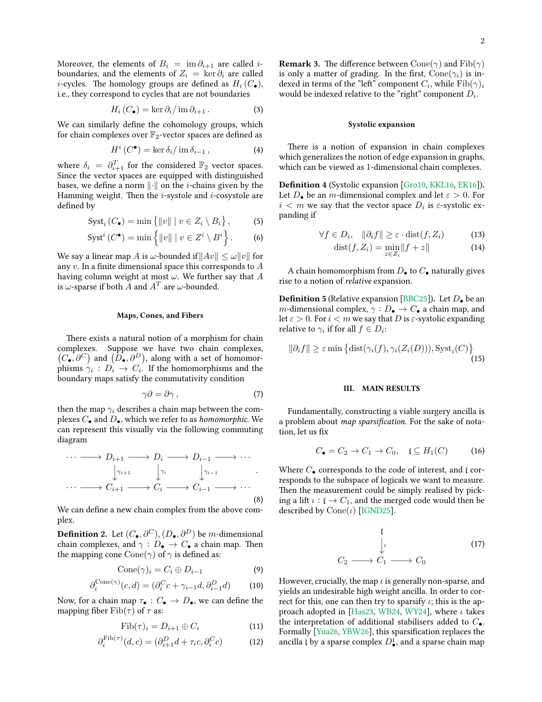
<figcaption class="paper-figure-caption"><b>Fig 1.</b> Low-resolution page preview, page 2</figcaption>
</figure>
<figure class="paper-figure-card">
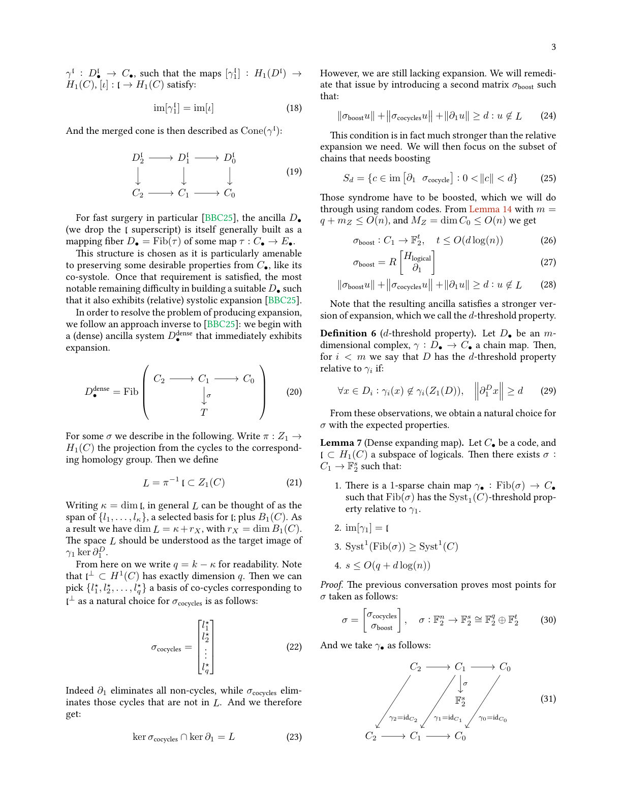
<figcaption class="paper-figure-caption"><b>Fig 2.</b> Low-resolution page preview, page 3</figcaption>
</figure>
<figure class="paper-figure-card">
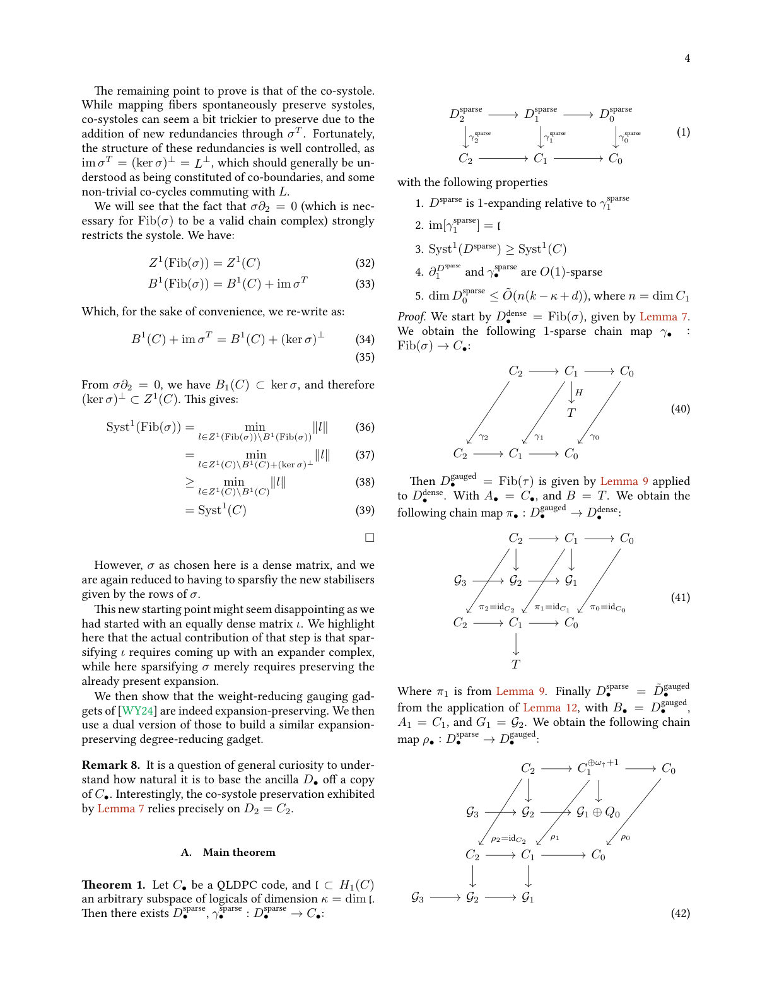
<figcaption class="paper-figure-caption"><b>Fig 3.</b> Low-resolution page preview, page 4</figcaption>
</figure>
<figure class="paper-figure-card">
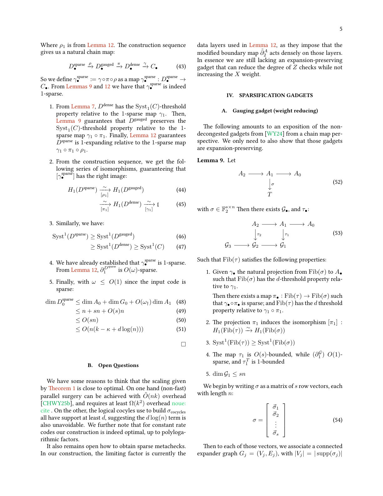
<figcaption class="paper-figure-caption"><b>Fig 4.</b> Low-resolution page preview, page 5</figcaption>
</figure>
<figure class="paper-figure-card">
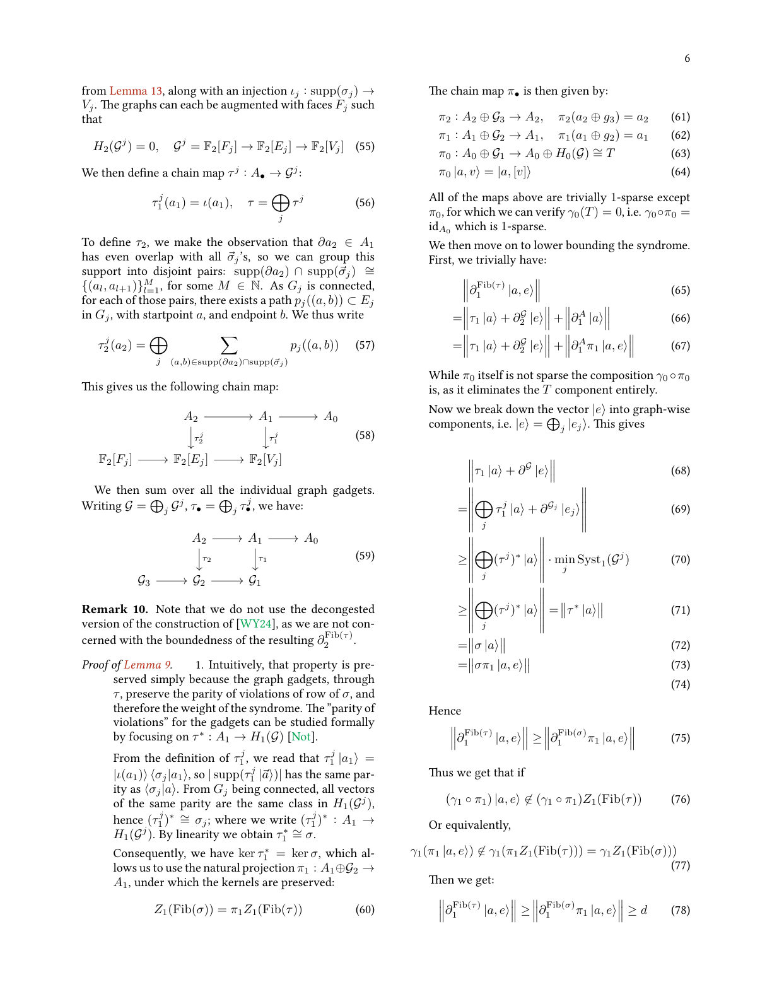
<figcaption class="paper-figure-caption"><b>Fig 5.</b> Low-resolution page preview, page 6</figcaption>
</figure>
</div>
<p><strong>Summary.</strong> This paper presents a theoretical improvement to the resource overhead required for performing fast surgery on QLDPC codes. By employing advanced techniques from algebraic topology and sparse complex construction, the authors reduce the required ancilla qubits from $    ilde{O}(nkd)$ to $  ilde{O}(n(k+d))$. This advancement is crucial for scaling up fault-tolerant quantum computation.</p>
<p><strong>Why it may be interesting.</strong> This work directly addresses the overhead costs associated with fault-tolerant quantum computation, which is a central concern for building large-scale quantum processors.</p>
<details>
<summary>Detailed structure</summary>
<p><strong>Main problem.</strong> The paper aims to improve the space overhead required for performing fast surgery on Quantum Low-Density Parity Check (QLDPC) codes.</p>
<p><strong>Main result.</strong> The authors demonstrate that fast surgery can be achieved with a space overhead of $   ilde{O}(n(k+d))$, significantly improving upon previous bounds of $ ilde{O}(nkd)$.</p>
<p><strong>Method.</strong> The technique involves constructing and sparsifying the surgery ancilla system using algebraic topology tools like mapping cones and leveraging expansion-preserving sparsification methods.</p>
<p><strong>Model / system.</strong> The system under study is QLDPC codes, which are mathematically described using chain complexes ($  ext{C}^{ullet}$). The process models fault-tolerant quantum computation via code surgery.</p>
<p><strong>Key observables.</strong> Space overhead ($  ilde{O}(n(k+d))$), Systole ($  ext{Syst}<em ext_sparse="ext{sparse">i$), and the dimension of the constructed ancilla complex ($\dim  ext{D}</em>^0$).}</p>
<p><strong>Important parameters / regimes.</strong> The code parameters $n$ (physical qubits), $k$ (logical qubits), and $d$ (error threshold).</p>
<p><strong>Assumptions / limitations.</strong> The construction relies on defining the dense ancilla using a boosting matrix from random codes, and the final step requires proving the preservation of co-systoles.</p>
<p><strong>Paper structure.</strong> The paper builds the surgery ancilla through a sequence of steps: starting with a dense system, applying sparsification via mapping cones, and employing gadgets (like the dual-gauging gadget) to reduce the complexity while preserving key properties like the systole.</p>
</details>
<details>
<summary>Abstract</summary>
<p>We show that the fast surgery framework of Baspin-Berent-Cohen can be instantiated using at most $\tilde{O}(n(k + d))$ ancilla qubits, improving on the previously achievable $O(n\cdot k \cdot d)$ overhead. This result also establishes that fast surgery can be performed at a cost comparable to the $\tilde{O}(nk)$ overhead required for regular surgery. We build the surgery ancilla by first starting with a dense, but expanding system; and then applying expansion-preserving sparsification methods from gauging and code embeddings.</p>
</details>
<p><sub><a href="#top">↑ back to top</a></sub></p>

<p><a id="paper-2610.11533"></a></p>
<h3 id="a-power-liouville-hermite-orbit-common-spectral-quantization-of-the-singular-sextic-oscillator-and-fractional-power-potentials"><a href="http://arxiv.org/abs/2610.11533v1">A Power-Liouville Hermite Orbit: Common Spectral Quantization of the Singular Sextic Oscillator and Fractional-Power Potentials</a></h3>
<p><strong>Authors:</strong> Artur Ishkhanyan, Miloslav Znojil<br>
<strong>Type:</strong> theory · <strong>Category:</strong> other · <strong>PDF:</strong> <a href="https://arxiv.org/pdf/2610.11533v1">https://arxiv.org/pdf/2610.11533v1</a><br>
<strong>Analysis basis:</strong> full PDF text, analyzed in chunks</p>
<div class="figure-strip-hint">↔ Scroll figures horizontally</div>
<div class="paper-figures-scroll">
<figure class="paper-figure-card">
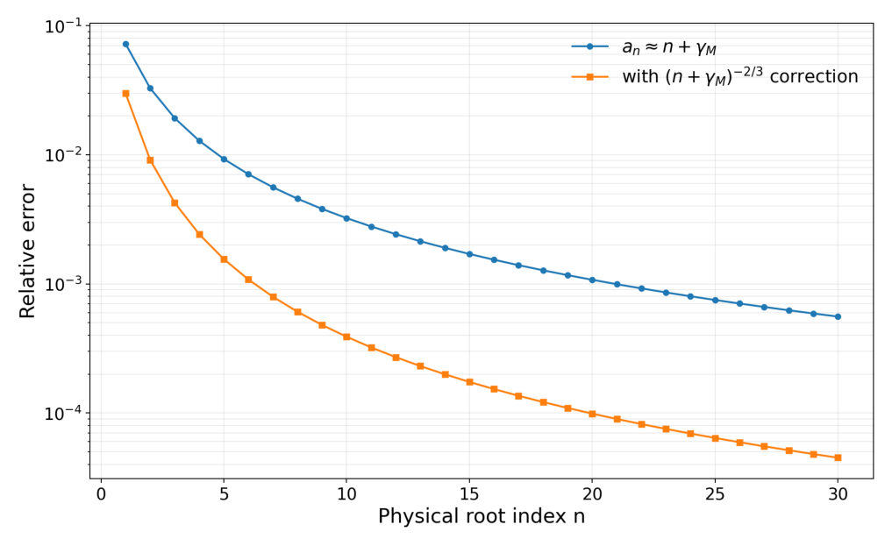
<figcaption class="paper-figure-caption"><b>Fig 1.</b> Figure 1: Relative error of the leading and corrected large-n formulas for the exact physical roots of the common Hermite spectrum equation.</figcaption>
</figure>
</div>
<p><strong>Summary.</strong> This theoretical paper connects the spectral quantization of a singular sextic oscillator to fractional-power potentials by identifying a common 'power-Liouville Hermite orbit.' Using advanced techniques like coordinate transformations and semiclassical matching, the authors prove that these diverse potentials share an identical underlying quantization structure. This work provides a unified mathematical framework for understanding spectral properties across different physical models.</p>
<p><strong>Why it may be interesting.</strong> The rigorous mathematical connection established between multiple exactly solvable potentials via a single spectral orbit is highly relevant for understanding the underlying symmetries and quantization rules in quantum mechanics, applicable to systems modeled by complex differential equations.</p>
<details>
<summary>Detailed structure</summary>
<p><strong>Main problem.</strong> The paper aims to establish a deep mathematical connection between the spectral quantization of a singular sextic oscillator and various fractional-power potentials.</p>
<p><strong>Main result.</strong> It demonstrates that these potentials share a common 'power-Liouville Hermite orbit,' characterized by an exact discrete sequence of quartic Sturmian eigencouplings for the sextic oscillator.</p>
<p><strong>Method.</strong> The analysis employs power-Liouville coordinate transformations and analyzes the invariance of the Wronskian zero set across different spectral charts derived from the biconfluent-Heun equation.</p>
<p><strong>Model / system.</strong> The core model is the singular sextic oscillator, analyzed within the framework of the biconfluent Heun equation. This system is shown to be spectrally equivalent to potentials like $x^{2/3}$ and inverse-square-root potentials.</p>
<p><strong>Key observables.</strong> The exact discrete sequence of quartic Sturmian eigencouplings, the vanishing of the degree-five accessory compatibility obstruction, and the common physical zero set (Wronskian zero set).</p>
<p><strong>Important parameters / regimes.</strong> The index $N=4$ of the Hermite hierarchy, and the quantization parameter derived from the Frobenius index ($
u=5$).</p>
<p><strong>Assumptions / limitations.</strong> The analysis relies on selecting a specific 'physical slice' and assumes that spectral equivalence is defined by the preservation of the physical zero set under reparametrization.</p>
<p><strong>Figures summary.</strong> Not specified, but the notes reference Table 2 showing numerical verification of eigencouplings via two-sided shooting methods.</p>
<p><strong>Paper structure.</strong> The paper builds by first defining the spectral problem via the biconfluent Heun equation, then applying power-Liouville transformations to generate the orbit, and finally using advanced semiclassical methods (matched large-action analysis) to derive the precise quantization rules.</p>
</details>
<details>
<summary>Abstract</summary>
<p>A singular sextic oscillator in the finite-Hermite biconfluent-Heun hierarchy generates an exact four-member power-Liouville Hermite orbit. Power coordinate transformations with the Liouville amplitude map the hierarchy member $N=4$ to four half-line Schrödinger spectral charts while preserving the physical regular-recessive Wronskian zero set under energy-coupling reparametrization. Two charts are the previously studied $x^{2/3}$ and inverse-square-root conditionally integrable potentials; the orbit embeds this known power-dual pair together with the singular sextic and linear-plus-quadratic charts. On the selected physical slice, the degree-five accessory compatibility obstruction vanishes identically, while the transformed Frobenius index reproduces both published fractional-power centrifugal coefficients. The common endpoint condition yields an exact discrete sequence of quartic Sturmian eigencouplings for the sextic oscillator. Independent two-sided shooting confirms representative eigencouplings and node counts. A matched large-action analysis further derives the first matched-endpoint correction within the leading Langer action and improves the Maslov-shifted effective-level approximation. The construction thus connects exact Hermite solvability, energy quantization, coupling quantization, and power duality within a single spectral orbit.</p>
</details>
<p><sub><a href="#top">↑ back to top</a></sub></p>

<p><a id="paper-2610.11094"></a></p>
<h3 id="attainable-boundaries-versus-operational-equivalence-dual-benchmarks-for-the-hierarchical-assessment-of-quantum-resources"><a href="http://arxiv.org/abs/2610.11094v1">Attainable Boundaries versus Operational Equivalence: Dual Benchmarks for the Hierarchical Assessment of Quantum Resources</a></h3>
<p><strong>Authors:</strong> Sunho Kim, Chunhe Xiong, Junde Wu<br>
<strong>Type:</strong> theory · <strong>Category:</strong> quantum information and computing · <strong>PDF:</strong> <a href="https://arxiv.org/pdf/2610.11094v1">https://arxiv.org/pdf/2610.11094v1</a><br>
<strong>Analysis basis:</strong> full PDF text, analyzed in chunks</p>
<div class="figure-strip-hint">↔ Scroll figures horizontally</div>
<div class="paper-figures-scroll">
<figure class="paper-figure-card">
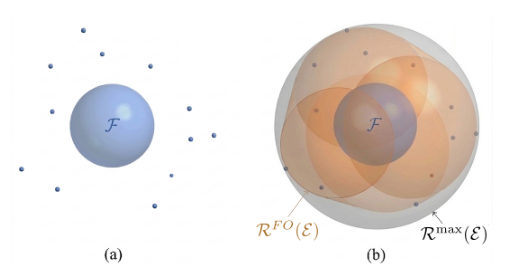
<figcaption class="paper-figure-caption"><b>Fig 1.</b> FIG. 1. (a) Let E denote the set of currently accessible or preparable states—be they finite, countably infinite, or continuous. While this set can generally be assumed to encompass all free states, no univer- sal quantitative method is known that guarantees both convexity and monotonicity under free operations when attempting to quantify rel- ative resources relative to E. (b) To resolve this issue, we construct two reference sets. The first is RF O(E), defined as the subset of states reachable from E exclusively via free operations. The second is Rmax(E), comprising all states that, although inaccessible via free operations, yield equivalent performance in the given quantum task.</figcaption>
</figure>
<figure class="paper-figure-card">
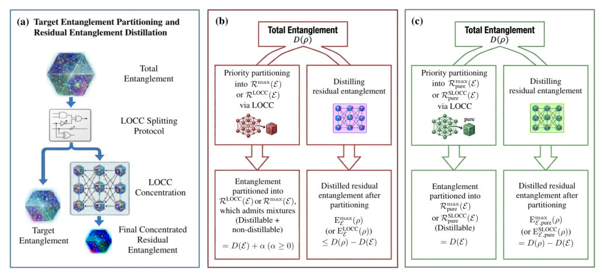
<figcaption class="paper-figure-caption"><b>Fig 2.</b> FIG. 2. (a) The initial state embeds the target entanglement—determined via a given reference set—while the residual entanglement is constituted by the remainder upon its exclusion, with all processing executed via LOCC. (b) Inefficiency of partitioning via a benchmark for entanglement partitioning admitting mixed states (Ineq. (54)). (c) Perfect reversibility under a pure-state partitioning benchmark (Eq. (55)).</figcaption>
</figure>
</div>
<p><strong>Summary.</strong> This paper develops a novel quantum resource theory framework that moves beyond idealized free states by benchmarking quantum resources against the set of states actually preparable in current experiments ($E$). It introduces a dual-benchmark approach—one for immediate performance and one for intrinsic potential—to provide a more realistic measure of resource utility. This is vital for advancing quantum technologies by grounding theory in physical operational constraints.</p>
<p><strong>Why it may be interesting.</strong> It provides a rigorous, operational framework for quantifying quantum resources that directly addresses the gap between theoretical ideals and experimental reality, which is crucial for designing practical quantum protocols.</p>
<details>
<summary>Detailed structure</summary>
<p><strong>Main problem.</strong> Conventional quantum resource theories benchmark utility against idealized free states, failing to account for the practical constraints of current experimental apparatus.</p>
<p><strong>Main result.</strong> The authors propose a dual-benchmark framework that quantifies relative resource utility by comparing states against the set of practically accessible resources ($E$), demonstrating its utility for resource management.</p>
<p><strong>Method.</strong> The framework establishes two benchmarks: a strategy-dependent measure for achievable performance and a strategy-independent lower bound for intrinsic potential, using $E$ as the reference set.</p>
<p><strong>Model / system.</strong> The system involves general quantum states and resource quantification, extending resource theories to incorporate the physical limitations imposed by the preparable set $E$ of states.</p>
<p><strong>Key observables.</strong> Relative Superiority ($    ext{RE}$), Distillable Entanglement ($D(
ho)$), and the residual resource entropy ($E_{rde}^E(
ho)$).</p>
<p><strong>Important parameters / regimes.</strong> The reference set $E$ (the attainable boundary), and the asymptotic limits ($\epsilon 	o 0, n 	o \infty$) used in derivations.</p>
<p><strong>Assumptions / limitations.</strong> The core assumption is that defining $E$ as the reference point resolves the challenge of strategy-dependent operational efficacy in QRTs.</p>
<p><strong>Figures summary.</strong> Figure 1 illustrates the construction of two key reference sets: $E$ (currently accessible states) and $   ext{RFO}(E)$ (states reachable via free operations) and $   ext{Rmax}(E)$ (performance-equivalent states).</p>
<p><strong>Paper structure.</strong> The paper systematically introduces the limitation of free-state benchmarks, proposes the framework using $E$, develops the dual-benchmark methodologies, and validates the approach using entanglement distillation as a concrete example.</p>
</details>
<details>
<summary>Abstract</summary>
<p>While conventional quantum resource theories quantify utility relative to an idealized set of free states, practical implementations are confined to a specific supply environment---a framework encompassing all states realizable or preparable via current experimental apparatus and design choices, not limited to free states. This work proposes a novel framework for evaluating the relative utility of arbitrary quantum states against the resource set made accessible by these current selections. We specifically focus our investigation on two canonical representations: the set of states reachable via free operations as the attainable boundary imposed by current experimental constraints, and the set defined through numerical optimization as the criterion for operational equivalence. Our framework establishes two core evaluation methodologies. First, we provide a strategy-dependent benchmark by assessing a state's performance relative to the reference set under its individually optimized strategy, thereby quantifying achievable performance. Second, we derive a computable lower bound on this superiority by considering optimal strategies for each state individually, enabling the quantification of strategy-independent relative performance independent of specific experimental setups. Beyond relative efficiency metrics, we demonstrate the practical utility of this approach for resource management scenarios, including the selective extraction of states advantageous for storage and distribution, and the concentration of residual resources. Using quantum entanglement as a paradigmatic example, we prove that distillable entanglement can be fully recovered via extraction and concentration when the reference set is restricted to pure states, thereby demonstrating the practical relevance of our framework.</p>
</details>
<p><sub><a href="#top">↑ back to top</a></sub></p>

<p><a id="paper-2610.11759"></a></p>
<h3 id="beyond-qaoa-a-review-of-ai-and-quantum-computing-for-adaptive-combinatorial-optimization"><a href="http://arxiv.org/abs/2610.11759v1">Beyond QAOA: A Review of AI and Quantum Computing for Adaptive Combinatorial Optimization</a></h3>
<p><strong>Authors:</strong> Hoong Chuin LAU<br>
<strong>Type:</strong> theory · <strong>Category:</strong> quantum information and computing · <strong>PDF:</strong> <a href="https://arxiv.org/pdf/2610.11759v1">https://arxiv.org/pdf/2610.11759v1</a><br>
<strong>Analysis basis:</strong> full PDF text, analyzed in chunks</p>
<div class="figure-strip-hint">↔ Scroll figures horizontally</div>
<div class="paper-figures-scroll">
<figure class="paper-figure-card">
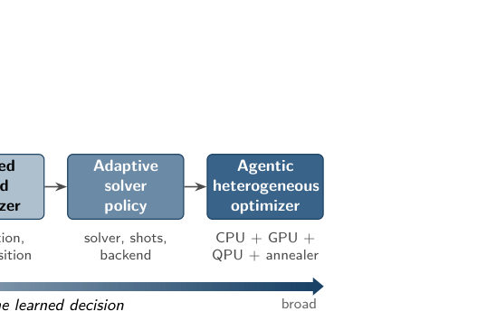
<figcaption class="paper-figure-caption"><b>Fig 1.</b> Figure 1: Increasing scope of learned decisions in quantum combinatorial optimization. Each stage widens what is learned (labels below each box), from a fixed quantum algorithm to policies that allocate work across heterogeneous classical and quantum resources.</figcaption>
</figure>
<figure class="paper-figure-card">
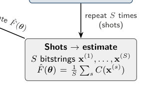
<figcaption class="paper-figure-caption"><b>Fig 2.</b> Figure 2: The hybrid variational loop used by QAOA and other variational quantum algorithms. The quantum processor acts as a parameterized sampler; all optimization of the parameters happens classi- cally, using objective estimates obtained from S shots.</figcaption>
</figure>
<figure class="paper-figure-card">
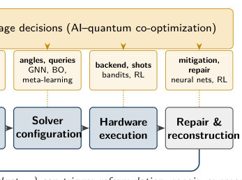
<figcaption class="paper-figure-caption"><b>Fig 3.</b> Figure 3: Pipeline view of AI intervention points and execution feedback. Each stage carries the decision that is learned and the AI methods typically used (Table 3). Component-level methods (AI-for-QO) act on a single stage; co-optimization methods learn a policy that coordinates several stages, conditioned on execution feedback.</figcaption>
</figure>
<figure class="paper-figure-card">
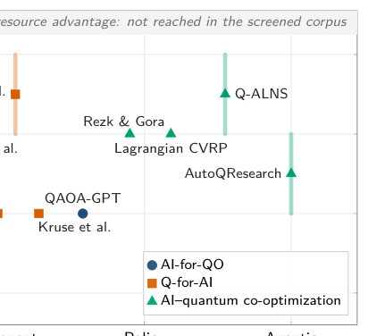
<figcaption class="paper-figure-caption"><b>Fig 4.</b> Figure 4: Degree of AI autonomy versus the strongest quantum evidence reported by representative studies. Vertical positions are the maturity levels coded in the evidence matrix (Section A); translucent bars mark studies coded as a range (e.g., M3–M4), with the marker at the midpoint. Horizontal positions are qualitative. Marker shape and colour indicate the paradigm.</figcaption>
</figure>
<figure class="paper-figure-card">
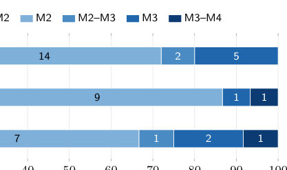
<figcaption class="paper-figure-caption"><b>Fig 5.</b> Figure 5: Distribution of evidence maturity within each paradigm for the evidence core, using the coding described in Section A. Bar segments show the share of studies at each level; numbers inside segments are study counts. Background reviews (10), structural precursors (4), and one benchmark study are omitted. No study is coded at M0, M4, or M5.</figcaption>
</figure>
</div>
<p><strong>Summary.</strong> This review surveys the rapidly evolving field of using Artificial Intelligence to enhance quantum computation for solving hard combinatorial optimization problems. It categorizes current research into three paradigms and critically assesses the evidence, concluding that the primary challenge is managing the allocation of classical and quantum resources rather than just qubit count. The paper provides a structured framework for future research in the field.</p>
<p><strong>Why it may be interesting.</strong> It provides a high-level, critical survey of the intersection between ML and quantum computation, which is crucial for understanding the practical roadmap for quantum algorithm development beyond simple circuit implementations.</p>
<details>
<summary>Detailed structure</summary>
<p><strong>Main problem.</strong> The review addresses the challenge of adaptive combinatorial optimization on near-term quantum processors, where resource constraints and complex decision-making limit current approaches.</p>
<p><strong>Main result.</strong> Evidence is stronger for using AI to assist quantum optimization (AI-for-QO) than for using quantum computation to improve learned classical optimizers (Q-for-AI). Scaling is identified as a systems problem of resource allocation.</p>
<p><strong>Method.</strong> The paper reviews the literature by organizing it around the specific decision being learned (e.g., parameter initialization, circuit design, penalty selection) rather than by application.</p>
<p><strong>Model / system.</strong> The focus is on mapping combinatorial problems (like MaxCut or VRP) to QUBO/Ising models, which are then solved using parameterized quantum circuits (PQCs) like QAOA or VQE on NISQ hardware.</p>
<p><strong>Key observables.</strong> Solution quality (optimality gap, approximation ratio), feasibility (feasible-sample rate), and resource costs (shot budget, quantum evaluations).</p>
<p><strong>Important parameters / regimes.</strong> The M0-M5 evidence hierarchy is used to grade maturity, and key parameters include the QAOA depth ($p$) and the shot budget ($S$).</p>
<p><strong>Assumptions / limitations.</strong> The review notes that experimental controls are thin, and many studies lack proper classical baselines or fully isolate the quantum contribution.</p>
<p><strong>Figures summary.</strong> Figure 1 illustrates the increasing scope of learned decisions, progressing from fixed quantum algorithms to adaptive solver policies across heterogeneous resources.</p>
<p><strong>Paper structure.</strong> The review systematically examines three paradigms (AI-for-QO, Q-for-AI, Co-Optimization) and structures the literature review by the decision being learned, culminating in a detailed evidence matrix (Table 7).</p>
</details>
<details>
<summary>Abstract</summary>
<p>Near-term quantum approaches to combinatorial optimization are limited by qubit counts, circuit fidelity, sampling cost, and the difficulty of encoding constraints, while machine learning is increasingly used to configure and control quantum optimization workflows. We call such workflows adaptive: decisions conventionally fixed in advance, from formulation and penalties to shot budgets, backends, and whether to invoke a quantum processor at all, are made by learned policies that respond to the instance, the progress of the solve, or the hardware. This review examines three paradigms, AI for quantum optimization, quantum for AI-driven optimization, and AI-quantum co-optimization, and organizes the literature by the decision being learned rather than by application. A structured review of 119 papers, 67 coded in detail, shows that the evidence is considerably stronger for AI-assisted quantum optimization than for the reverse direction: learning already reduces quantum evaluations, improves initialization, supports decomposition and penalty control, and mitigates noise, whereas evidence that quantum computation improves learned optimizers remains largely confined to small-scale simulation. Experimental controls are thin: 25 of 57 studies include no classical baseline, the quantum contribution is fully isolated in 10 of 24 studies where an ablation applies, and the median experiment uses 17 qubits. We introduce an M0-M5 evidence hierarchy, from simulation to matched-resource practical advantage, and find no broadly convincing result at the highest level. We argue that scaling is increasingly a systems problem: the question is not only whether a problem fits on a quantum processor, but how classical and quantum resources should be allocated across the optimization process. The review is aimed at researchers in quantum computing, machine learning, and operations research.</p>
</details>
<p><sub><a href="#top">↑ back to top</a></sub></p>

<p><a id="paper-2610.11513"></a></p>
<h3 id="certifying-hidden-paths-scalable-topology-assurance-for-qkd-networks"><a href="http://arxiv.org/abs/2610.11513v1">Certifying Hidden Paths: Scalable Topology Assurance for QKD Networks</a></h3>
<p><strong>Authors:</strong> Alessandro Colombo, Margherita Cozzolino, Stephan Krenn, Thomas Lorünser<br>
<strong>Type:</strong> theory · <strong>Category:</strong> quantum information and computing · <strong>PDF:</strong> <a href="https://arxiv.org/pdf/2610.11513v1">https://arxiv.org/pdf/2610.11513v1</a><br>
<strong>Analysis basis:</strong> full PDF text, analyzed in chunks</p>
<div class="figure-strip-hint">↔ Scroll figures horizontally</div>
<div class="paper-figures-scroll">
<figure class="paper-figure-card">
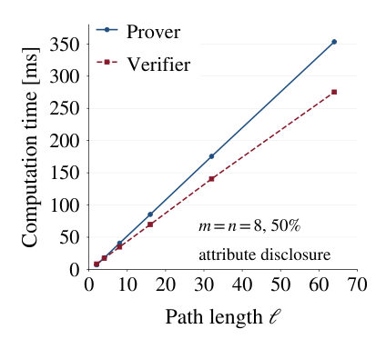
<figcaption class="paper-figure-caption"><b>Fig 1.</b> Fig. 3. Runtime versus path length ℓwith m = n = 8 and 50% disclosure.</figcaption>
</figure>
<figure class="paper-figure-card">
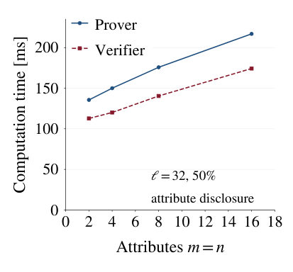
<figcaption class="paper-figure-caption"><b>Fig 2.</b> Fig. 4. Runtime versus attributes m = n with ℓ= 32 and 50% disclosure.</figcaption>
</figure>
</div>
<p><strong>Summary.</strong> This work introduces a novel, scalable cryptographic protocol to assure the security of communication paths in large QKD networks. It allows a provider to prove that a valid, policy-compliant route exists without revealing the network's sensitive internal topology. By certifying nodes and edges independently, the method ensures that proof complexity scales only with the path length, not the entire network size.</p>
<p><strong>Why it may be interesting.</strong> While highly cryptographic, the focus on quantum networks and secure communication protocols places it directly within the domain of quantum information security, which is a key application area for quantum physics.</p>
<details>
<summary>Detailed structure</summary>
<p><strong>Main problem.</strong> The paper addresses the need for a scalable, zero-knowledge mechanism to prove the existence of policy-compliant paths in large-scale Quantum Key Distribution (QKD) networks without revealing the network's internal topology.</p>
<p><strong>Main result.</strong> They propose a topology-certification mechanism that certifies nodes and edges independently using multi-message signatures, achieving proof sizes and computational costs independent of the overall network size.</p>
<p><strong>Method.</strong> The approach uses advanced zero-knowledge proof techniques, combining multi-message signatures and NIZK proofs to prove path existence while hiding the specific route and topology details.</p>
<p><strong>Model / system.</strong> The context is large-scale QKD networks, which are modeled as directed graphs where security assurance depends on the entire communication path.</p>
<p><strong>Key observables.</strong> Proof size (e.g., below 300 KiB for specific parameters) and cryptographic generation/verification times (e.g., below 400 ms).</p>
<p><strong>Important parameters / regimes.</strong> Path length ($\ell$), number of nodes ($m$), and number of edges ($n$); the proof cost is shown to be independent of the total network size.</p>
<p><strong>Assumptions / limitations.</strong> The security relies on the underlying cryptographic assumptions, such as the special soundness of the $\Sigma$-protocols and the discrete-logarithm assumptions.</p>
<p><strong>Paper structure.</strong> The paper builds from preliminaries defining cryptographic building blocks, develops the core mechanism by certifying components independently, and concludes with extensions for multi-path support and graph evolution.</p>
</details>
<details>
<summary>Abstract</summary>
<p>Large-scale Quantum Key Distribution (QKD) networks rely on trusted repeaters, making the security properties of the selected communication path an essential part of end-to-end assurance. At the same time, network operators may be unwilling to disclose their internal topology. We present a topology-certification mechanism that lets a provider prove in zero knowledge that policy-compliant routes between two endpoints exist, without disclosing the routes in an individual presentation. Our main idea is to certify nodes and edges independently using multi-message signatures, rather than signing the complete graph as one object. For a route chosen in advance, proof size and cryptographic proving and verification work depend on its positions and attributes, independently of the overall network size, whereas route discovery and certification have separate graph-dependent costs. The construction hides the actual route length up to a public bound and sketches extensions to node-disjoint routes and monotonic additions within a graph epoch. We give a formal security model and conditional proofs of unforgeability and graph hiding for a generic construction. For a BBS-based construction, presentation-size estimates remain below $300$\,KiB at $\ell=m=n=50$, and measured generation and verification times remain below $400$\,ms at $\ell=64$ and $m=n=8$.</p>
</details>
<p><sub><a href="#top">↑ back to top</a></sub></p>

<p><a id="paper-2610.12447"></a></p>
<h3 id="entanglement-entropy-and-magic-of-zx-diagrams"><a href="http://arxiv.org/abs/2610.12447v1">Entanglement entropy and magic of ZX-diagrams</a></h3>
<p><strong>Authors:</strong> Marcin Szyniszewski, Razin A. Shaikh, Aleks Kissinger<br>
<strong>Type:</strong> theory · <strong>Category:</strong> quantum information and computing · <strong>PDF:</strong> <a href="https://arxiv.org/pdf/2610.12447v1">https://arxiv.org/pdf/2610.12447v1</a><br>
<strong>Analysis basis:</strong> full PDF text, analyzed in chunks</p>
<div class="figure-strip-hint">↔ Scroll figures horizontally</div>
<div class="paper-figures-scroll">
<figure class="paper-figure-card">
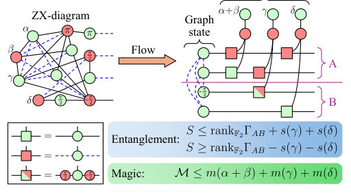
<figcaption class="paper-figure-caption"><b>Fig 1.</b> FIG. 1. Estimating entanglement entropy and magic of ZX- diagrams. Flow enables conversion to a normal form separat- ing graph-state backbone from Pauli gadgets. Gadget cross- ing A|B bipartition add s(φ) = h2(sin2 φ</figcaption>
</figure>
<figure class="paper-figure-card">
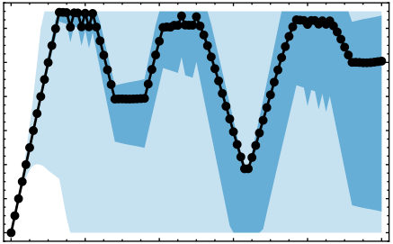
<figcaption class="paper-figure-caption"><b>Fig 2.</b> FIG. 2. Half-chain entanglement entropy in (a) random Clifford-plus-small-phase circuit for L = 20 qubits, and (b) cir- cuit combining Trotterized Hamiltonian evolution with Clifford layers for L = 26 qubits. The entropy bound from Eq. 2 re- mains close to the exact entropy (darker blue region), while generic entangling-capacity bounds broaden rapidly (lighter blue region).</figcaption>
</figure>
<figure class="paper-figure-card">
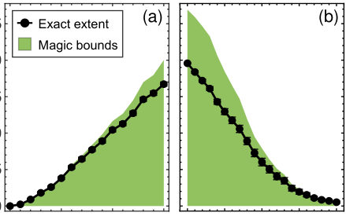
<figcaption class="paper-figure-caption"><b>Fig 3.</b> FIG. 3. Logarithmic stabilizer extent for (a) random Clifford- plus-small-phase unitary circuit and (b) random circuit with mid-circuit measurements, with L = 8 qubits. The magic bound Eq. 4 is shown in green.</figcaption>
</figure>
</div>
<p><strong>Summary.</strong> This paper introduces scalable methods to quantify entanglement entropy and 'magic' (non-stabilizerness) directly from ZX-diagrams, bypassing costly full state contractions. By decomposing the circuit into a graph-state backbone and non-Clifford gadgets, the authors derive additive bounds for these key quantum resources. This establishes a crucial link between the graphical ZX-calculus and the characterization of quantum many-body resources.</p>
<p><strong>Why it may be interesting.</strong> The work provides a powerful, diagrammatic tool to characterize complex quantum states arising from quantum computation models, offering insights into resource quantification that is crucial for understanding computational complexity.</p>
<details>
<summary>Detailed structure</summary>
<p><strong>Main problem.</strong> The paper addresses the challenge of efficiently estimating quantum resources, specifically entanglement entropy and 'magic' (non-stabilizerness), directly from the structure of ZX-diagrams without resorting to computationally expensive full tensor contractions.</p>
<p><strong>Main result.</strong> The authors derive scalable, additive upper and lower bounds for entanglement entropy and magic based on decomposing the ZX-diagram into a graph-state backbone and non-Clifford Pauli gadgets.</p>
<p><strong>Method.</strong> They utilize a 'Flow' criterion to transform the ZX-diagram into a normal form, allowing the separation of the graph-state part from the non-Clifford contributions, which then yields the resource bounds.</p>
<p><strong>Model / system.</strong> The model is quantum states and dynamics represented by ZX-diagrams, which are used to describe quantum circuits, including those involving random unitaries, Trotterized Hamiltonian evolution, and Clifford layers.</p>
<p><strong>Key observables.</strong> Entanglement Entropy ($S$, including Rényi variants $S_\alpha$), Magic (logarithmic stabilizer extent $M$), and the entanglement entropy of the graph-state backbone ($   ext{rank}<em AB>{\mathbb{F}_2}\Gamma</em>$).</p>
<p><strong>Important parameters / regimes.</strong> Circuit depth, number of qubits, and the phases ($\varphi_i$) associated with the non-Clifford Pauli gadgets.</p>
<p><strong>Assumptions / limitations.</strong> The derived strict bounds assume that there is no coherent interference between the Pauli gadgets, although the method remains informative even when such interference occurs.</p>
<p><strong>Figures summary.</strong> Figures illustrate the decomposition of the circuit into a normal form (Fig. 1), and compare the derived bounds for entanglement entropy and magic against exact calculations for random and Trotterized circuits (Figs. 2 and 3).</p>
<p><strong>Paper structure.</strong> The paper systematically develops bounds for entanglement entropy and magic by first establishing the normal form decomposition via 'Flow', then deriving additive bounds for the entropy contribution from gadgets, and finally applying these concepts to benchmark random and structured quantum circuits.</p>
</details>
<details>
<summary>Abstract</summary>
<p>Entanglement and non-stabilizerness are complementary resources underlying the complexity of quantum states, yet extracting either quantity from large quantum circuits generally requires exponentially scaling resources. In diagrammatic approaches to quantum computation, such as the ZX-calculus, both quantities likewise typically require expensive tensor contractions that are not native to graphical rewriting. Here we show that both entanglement and magic can be efficiently estimated directly from ZX-diagrams. Flow enables efficient extraction of a normal form separating a potentially extensively entangled graph-state backbone from non-Clifford Pauli gadgets. This structure yields additive upper and lower bounds on bipartite entanglement entropy, which we further tighten through a preprocessing procedure that removes or merges redundant non-Clifford contributions. The same normal form gives an upper bound on logarithmic stabilizer extent. We benchmark these methods in random unitary and monitored circuits, and a circuit combining Trotterized Hamiltonian evolution with Clifford layers, finding that the resulting bounds remain informative even at large qubit numbers, circuit depths, and internal spider counts. Our results provide scalable probes of entanglement and non-stabilizerness of ZX-diagrams and establish a bridge between ZX-calculus and quantum many-body resource characterization, with applications across quantum computing, quantum information, and condensed-matter physics.</p>
</details>
<p><sub><a href="#top">↑ back to top</a></sub></p>

<p><a id="paper-2610.12001"></a></p>
<h3 id="exact-value-and-rigidity-of-the-math985math-magic-rectangle"><a href="http://arxiv.org/abs/2610.12001v1">Exact value and rigidity of the $2\times3$ magic rectangle</a></h3>
<p><strong>Authors:</strong> Isaac Barouch Essayag, Aryeh Lev Zabokritskiy<br>
<strong>Type:</strong> theory · <strong>Category:</strong> quantum information and computing · <strong>PDF:</strong> <a href="https://arxiv.org/pdf/2610.12001v1">https://arxiv.org/pdf/2610.12001v1</a><br>
<strong>Analysis basis:</strong> full PDF text, analyzed in chunks</p>
<div class="figure-strip-hint">↔ Scroll figures horizontally</div>
<div class="paper-figures-scroll">
<figure class="paper-figure-card">
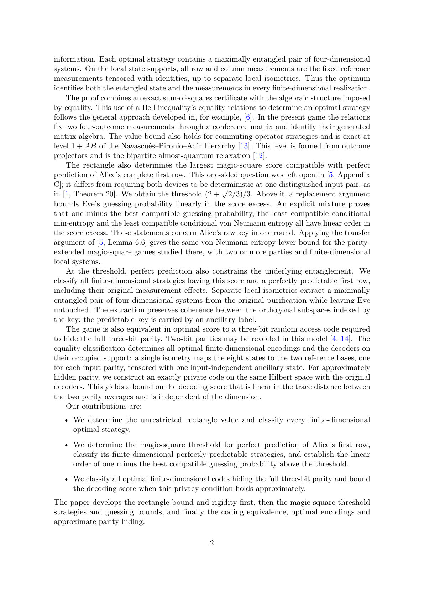
<figcaption class="paper-figure-caption"><b>Fig 1.</b> Low-resolution page preview, page 2</figcaption>
</figure>
<figure class="paper-figure-card">
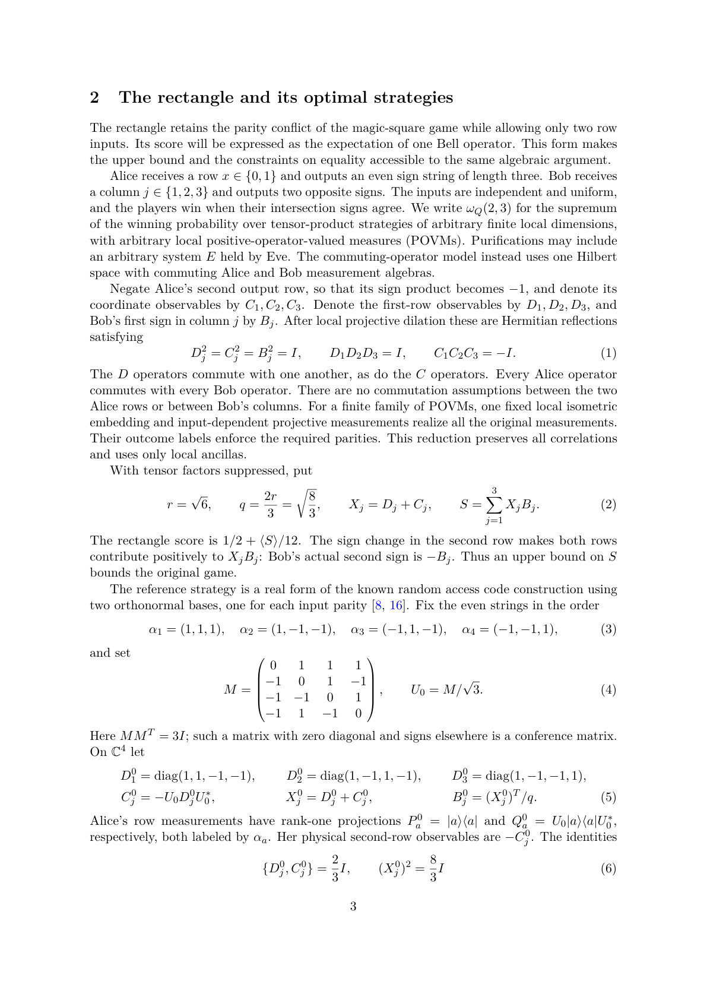
<figcaption class="paper-figure-caption"><b>Fig 2.</b> Low-resolution page preview, page 3</figcaption>
</figure>
<figure class="paper-figure-card">
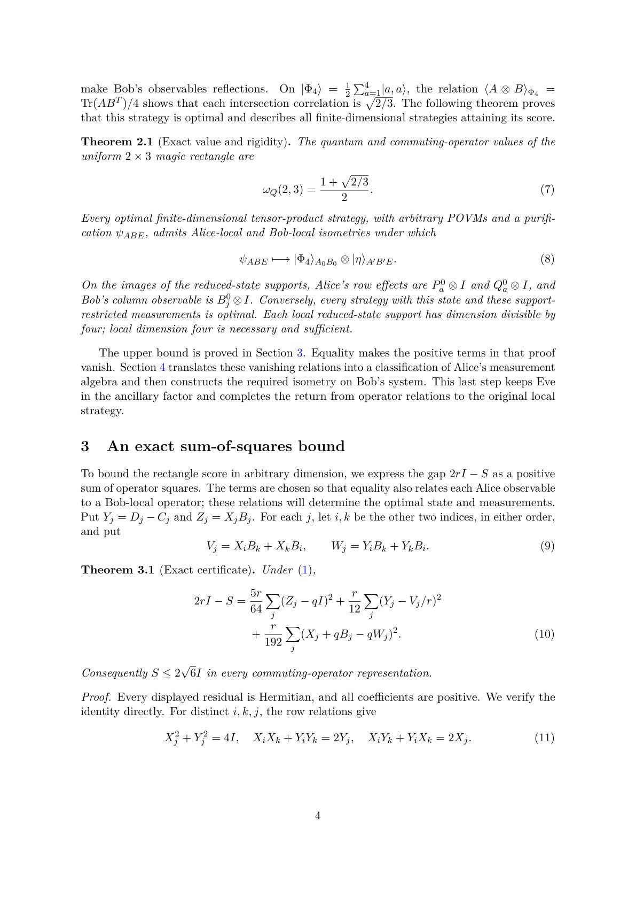
<figcaption class="paper-figure-caption"><b>Fig 3.</b> Low-resolution page preview, page 4</figcaption>
</figure>
<figure class="paper-figure-card">
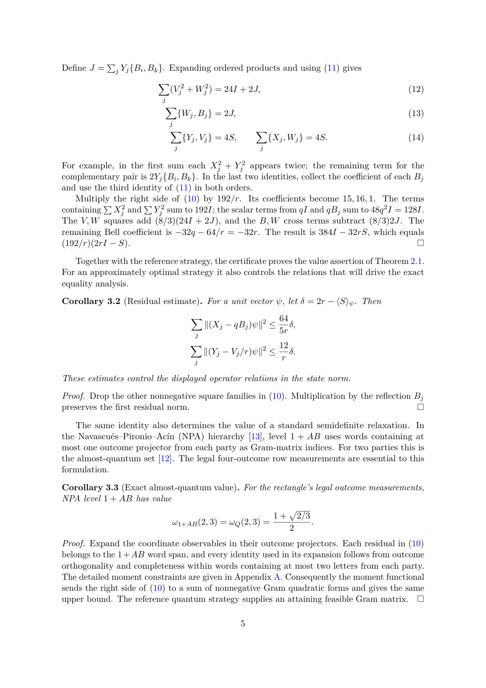
<figcaption class="paper-figure-caption"><b>Fig 4.</b> Low-resolution page preview, page 5</figcaption>
</figure>
<figure class="paper-figure-card">
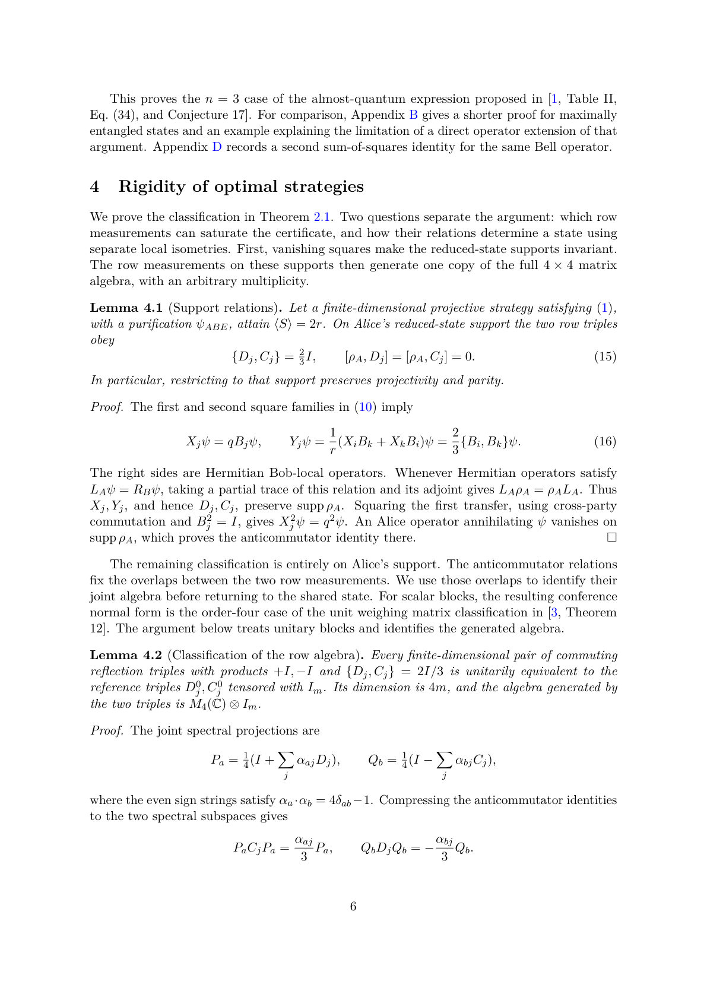
<figcaption class="paper-figure-caption"><b>Fig 5.</b> Low-resolution page preview, page 6</figcaption>
</figure>
</div>
<p><strong>Summary.</strong> This paper calculates the exact quantum value for the $2	imes3$ magic rectangle, a nonlocal game, finding it to be $(1+\sqrt{2/3})/2$. It achieves this by using advanced techniques involving sum-of-squares identities to bound the game's score. The work provides a deep classification of all optimal quantum strategies, linking the game to quantum random access codes.</p>
<p><strong>Why it may be interesting.</strong> The rigorous mathematical techniques used to classify optimal quantum strategies and derive exact bounds are highly relevant to understanding the limits of quantum correlations in various quantum information tasks.</p>
<details>
<summary>Detailed structure</summary>
<p><strong>Main problem.</strong> The paper determines the exact quantum value and classifies all optimal strategies for the $2	imes3$ magic rectangle, a specific nonlocal game.</p>
<p><strong>Main result.</strong> The quantum value of the game is proven to be $rac{1 + \sqrt{2/3}}{2}$, and the optimal strategies are shown to be highly rigid, involving maximally entangled pairs of four-dimensional systems.</p>
<p><strong>Method.</strong> The analysis uses techniques from nonlocal game theory, establishing upper bounds via exact sum-of-squares identities and classifying optimal structures by analyzing the equality conditions of these bounds.</p>
<p><strong>Model / system.</strong> The model is the $2	imes3$ magic rectangle, treated as a nonlocal game where two players match entries under incompatible parity constraints. The analysis is generalized to arbitrary finite local dimensions.</p>
<p><strong>Key observables.</strong> The quantum value $\omega_Q(2, 3)$ and the associated 'rectangle score' $S$, which is the expectation of a Bell operator.</p>
<p><strong>Important parameters / regimes.</strong> The local dimensions of the players' systems, and the entanglement structure involving four-dimensional systems.</p>
<p><strong>Assumptions / limitations.</strong> The analysis assumes the existence of arbitrary finite local dimensions and general local measurements (POVMs) to establish the general bounds.</p>
<p><strong>Figures summary.</strong> Not specified by the notes, but the structure suggests figures illustrating the sum-of-squares identities and the resulting optimal measurement operators.</p>
<p><strong>Paper structure.</strong> The paper progresses by first establishing an upper bound on the game's score using sum-of-squares techniques (Theorem 3.1), then using the equality conditions to classify the optimal measurement structure (Lemma 4.2), culminating in the proof of the exact value and the characterization of the optimal quantum state.</p>
</details>
<details>
<summary>Abstract</summary>
<p>The $2\times3$ magic rectangle is a nonlocal game in which two players match entries subject to incompatible parity constraints. We prove that its quantum value is $(1+\sqrt{2/3})/2$ and classify all optimal strategies in arbitrary finite local dimensions, allowing general measurements. Every optimal strategy contains a maximally entangled pair of four-dimensional systems, with fixed measurements on the local state supports up to local isometries and ancillary systems. The attaining construction was previously known from quantum random access codes. An exact sum-of-squares identity gives the upper bound, and its equality relations determine the measurement algebra needed for the classification. The rectangle determines the largest magic-square score compatible with perfect prediction of Alice's first row by an adversary with quantum side information. We classify all finite-dimensional strategies attaining this score with perfect prediction and show that one minus the best compatible guessing probability has linear order in the score excess above it. The same rigidity theorem classifies all optimal three-bit random access codes that hide the full input parity.</p>
</details>
<p><sub><a href="#top">↑ back to top</a></sub></p>

<p><a id="paper-2610.12075"></a></p>
<h3 id="field-resolved-hierarchy-of-superconducting-energy-gaps-in-pdte"><a href="http://arxiv.org/abs/2610.12075v1">Field-resolved hierarchy of superconducting energy gaps in PdTe</a></h3>
<p><strong>Authors:</strong> Sangyun Lee, A. M. Donald, D. Duong, S. Huang, R. Gazizulin, C. Huan, Rongying Jin<br>
<strong>Type:</strong> experiment · <strong>Category:</strong> other · <strong>PDF:</strong> <a href="https://arxiv.org/pdf/2610.12075v1">https://arxiv.org/pdf/2610.12075v1</a><br>
<strong>Analysis basis:</strong> full PDF text, analyzed in chunks</p>
<div class="figure-strip-hint">↔ Scroll figures horizontally</div>
<div class="paper-figures-scroll">
<figure class="paper-figure-card">

<figcaption class="paper-figure-caption"><b>Fig 1.</b> FIG. 1. (a) Crystal structure of PdTe constructed using the reported lattice parameters and atomic positions from Ref. [10]. Blue and brown spheres represent Pd and Te atoms, respectively. (b) Temperature dependence of the electrical re- sistance (red line) and zero-bias conductance (open circles) of PdTe. The resistance and zero-bias conductance show dis- tinct behaviors below Tc, indicating that the point contact is not in the thermal regime and preserves spectroscopic sensi- tivity to superconductivity.</figcaption>
</figure>
<figure class="paper-figure-card">
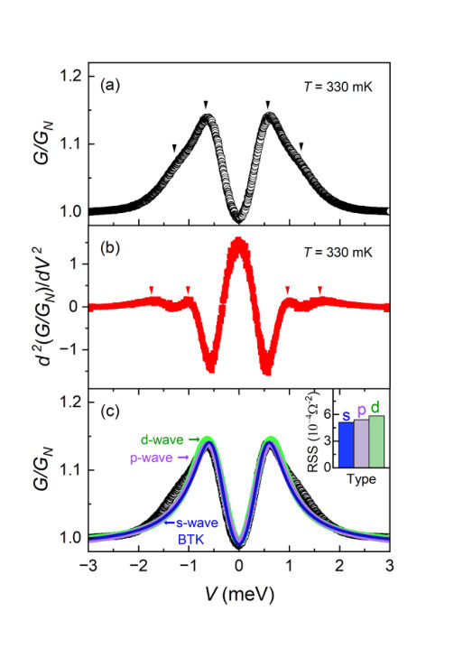
<figcaption class="paper-figure-caption"><b>Fig 2.</b> FIG. 2. (a) Soft point-contact spectroscopy of PdTe. The differential conductance G measured at 330 mK is plotted as a function of bias voltage. Vertical arrows mark addi- tional finite-bias spectroscopic features. (b) Second deriva- tive, d2G/dV 2, of the differential conductance shown in (a), highlighting two characteristic energy scales. (c) Normalized differential conductance of PdTe fitted using single-gap s-, p-, and d-wave BTK models. The blue, violet, and green curves represent the least-squares fits obtained using the s-, p-, and d-wave models, respectively. The inset compares the residual sum of squares (RSS) for the three models, showing that the s-wave model yields the smallest...</figcaption>
</figure>
<figure class="paper-figure-card">
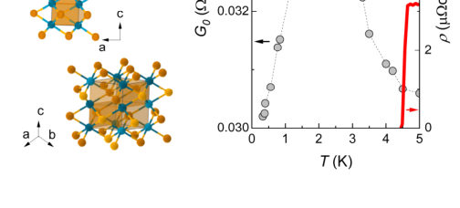
<figcaption class="paper-figure-caption"><b>Fig 3.</b> Figure 1(a) shows the crystal structure of PdTe, in which Pd and Te atoms form a hexagonal NiAs-type structure [10]. The superconducting transition of the measured crystal was first characterized by the electrical resistivity. As shown by the red curve in Fig. 1(b), the electrical resistivity decreases sharply and reaches zero at Tc ≈4.5 K, confirming superconductivity in PdTe. Soft point-contact Andreev-reflection spectroscopy was per-</figcaption>
</figure>
<figure class="paper-figure-card">
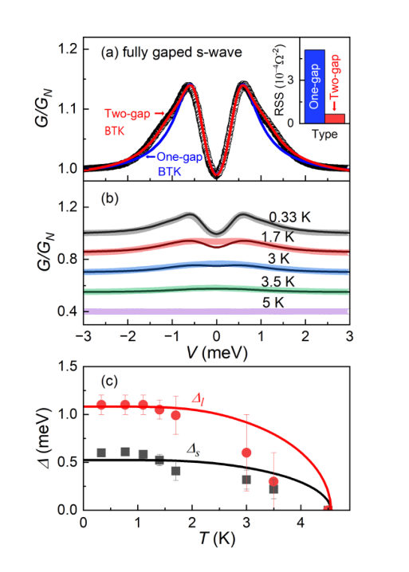
<figcaption class="paper-figure-caption"><b>Fig 4.</b> FIG. 3. (a) Normalized differential conductance of PdTe fitted using single-gap and two-gap s-wave BTK models. The blue and red curves represent the least-squares fits obtained using the single-gap and two-gap models, respectively. The two-gap fit yields ∆l = 1.1 meV and ∆s = 0.5 meV. The inset compares the residual sum of squares (RSS) for the two models; the RSS of the two-gap fit is approximately eight times smaller than that of the single-gap fit. (b) Temperature evolution of the soft point-contact Andreev-reflection spectra of PdTe. The solid curves are fits to the two-gap s-wave BTK model. (c) Temperature dependence of the superconducting energy gaps extracted from the two-gap BTK...</figcaption>
</figure>
<figure class="paper-figure-card">
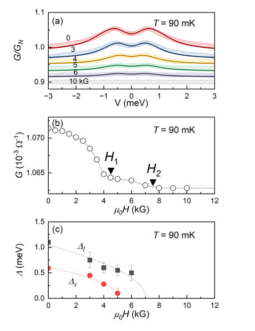
<figcaption class="paper-figure-caption"><b>Fig 5.</b> FIG. 4. (a) The magnetic-field evolution of the differential conductance spectra of PdTe measured at 90 mK for fields of 0, 3, 4, 5, 6, and 10 kG. (b) Magnetic-field dependence of the zero-bias conductance of PdTe. Vertical arrows mark charac- teristic fields, denoted H1 ≈4.5 kG and H2 ≈7.5 kG, asso- ciated with the suppression of the two spectroscopic energy gaps. (c) Magnetic-field dependence of the superconducting energy gaps extracted from the two-gap BTK analysis.</figcaption>
</figure>
</div>
<p><strong>Summary.</strong> This work investigates the superconducting gap structure in PdTe using point-contact spectroscopy. By analyzing the temperature and magnetic field dependence of the Andreev-reflection spectra, the authors demonstrate the existence of two distinct superconducting energy gaps. This field-resolved hierarchy suggests a complex, potentially multiband or surface-dominated, superconducting state in the material.</p>
<p><strong>Why it may be interesting.</strong> The clear separation of magnetic-field responses for different energy scales provides insight into the underlying pairing mechanism, which is crucial for understanding complex superconducting states in topological materials.</p>
<details>
<summary>Detailed structure</summary>
<p><strong>Main problem.</strong> The study aims to resolve how multiple superconducting energy scales evolve under an applied magnetic field to distinguish between multiband, anisotropic, or surface-sensitive superconducting responses in PdTe.</p>
<p><strong>Main result.</strong> The research reveals a field-resolved hierarchy of superconducting energy scales in PdTe, characterized by two distinct gaps ($\sim 0.5$ meV and $\sim 1.1$ meV) with different magnetic-field robustness.</p>
<p><strong>Method.</strong> Low-temperature soft point-contact spectroscopy (PCS) was employed to measure Andreev-reflection spectra, which were then analyzed using both single-gap and two-gap Blonder-Tinkham-Klapwijk (BTK) models.</p>
<p><strong>Model / system.</strong> The physical system is PdTe, a Dirac semimetal exhibiting superconductivity. The analysis relies on fitting the differential conductance spectra using the BTK formalism, comparing single-gap versus two-gap superconducting models.</p>
<p><strong>Key observables.</strong> Andreev-reflection spectra (differential conductance $dI/dV$), zero-bias conductance, and the characteristic superconducting energy gaps ($\Delta_l, \Delta_s$).</p>
<p><strong>Important parameters / regimes.</strong> Two characteristic superconducting energy scales (0.5 meV and 1.1 meV); two distinct magnetic fields (4.5 kG and 7.5 kG); the superconducting transition temperature ($T_c$).</p>
<p><strong>Assumptions / limitations.</strong> The analysis assumes the superconducting state can be modeled by two isotropic gap components ($\Delta_l$ and $\Delta_s$) and that the field dependence follows a characteristic suppression form.</p>
<p><strong>Figures summary.</strong> Figures show the crystal structure and resistance vs. temperature, soft PCS spectra, and detailed fits comparing single-gap vs. two-gap s-wave BTK models across temperature and magnetic field.</p>
<p><strong>Paper structure.</strong> The paper progresses from initial observations of two energy scales incompatible with single-gap models, to fitting the data with a two-gap model, and finally demonstrating the distinct magnetic-field evolution of these two gaps, establishing the hierarchy.</p>
</details>
<details>
<summary>Abstract</summary>
<p>Resolving how multiple superconducting energy scales evolve under magnetic field is important for distinguishing multiband, anisotropic, and surface-sensitive superconducting responses. Here, we investigate the superconducting state of PdTe using low-temperature soft point-contact spectroscopy in a sealed $^3$He immersion environment. The resulting Andreev-reflection spectra reveal two characteristic superconducting energy scales near 0.5 and 1.1 meV that are not adequately described by a single-gap BTK model. Both energy scales are progressively suppressed upon warming toward the same superconducting transition temperature $T_c$. In contrast, their magnetic-field evolution reveals two distinct characteristic fields near 4.5 and 7.5 kG. The lower scale is associated with the loss of the zero-resistance superconducting state, whereas the higher-energy spectroscopic response persists to substantially larger fields. Independent field-dependent gap analysis yields suppression scales consistent with those identified from the zero-bias conductance. These results reveal a field-resolved hierarchy of superconducting energy scales in PdTe and indicate superconducting responses with distinct magnetic-field robustness.</p>
</details>
<p><sub><a href="#top">↑ back to top</a></sub></p>

<p><a id="paper-2610.11484"></a></p>
<h3 id="from-band-reconstruction-to-bogoliubov-dispersion-how-dz2-band-enhances-iron-based-superconductivity"><a href="http://arxiv.org/abs/2610.11484v1">From band reconstruction to Bogoliubov dispersion: How dz2-band enhances iron-based superconductivity</a></h3>
<p><strong>Authors:</strong> Jingming Yan, Shendong Su, Guihao Jia, Yucong Peng, Xuanyu Long, Zheng Liu, Pei Ouyang, Qi-Kun Xue, Wei Li<br>
<strong>Type:</strong> both · <strong>Category:</strong> strongly correlated electrons · <strong>PDF:</strong> <a href="https://arxiv.org/pdf/2610.11484v1">https://arxiv.org/pdf/2610.11484v1</a><br>
<strong>Analysis basis:</strong> full PDF text, analyzed in chunks</p>
<div class="figure-strip-hint">↔ Scroll figures horizontally</div>
<div class="paper-figures-scroll">
<figure class="paper-figure-card">
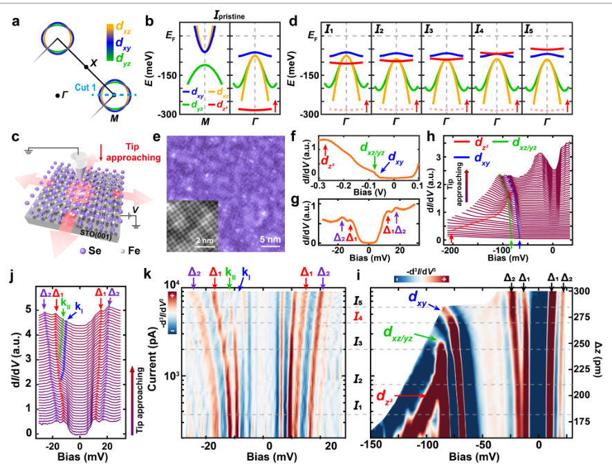
<figcaption class="paper-figure-caption"><b>Fig 1.</b> Figure 1. Tip-induced d-orbital band reconstruction and its influence on superconducting coherence peaks in monolayer FeSe/STO. (a), (b) Schematic of Fermi surface and band structure of monolayer FeSe/STO. Color code indicates orbital characters of bands. Cut 1 denote Γ-M direction. (c) Schematic of experimental setup. Tip-sample spacing is precisely reduced by increasing tunneling current It. (d) Positions of dz2 band under five tunnelling currents I1-I5. (e) Atomically resolved STM topography of Se-layer (30 nm × 30 nm; set point, V = 30 mV, It = 100 pA). Inset: zoom-in topography of Se-lattice (30 mV, 1 nA). (f) A wide-bias range dI/dV spectrum (set point, V = 30 mV, It = 5 pA). Colored...</figcaption>
</figure>
<figure class="paper-figure-card">
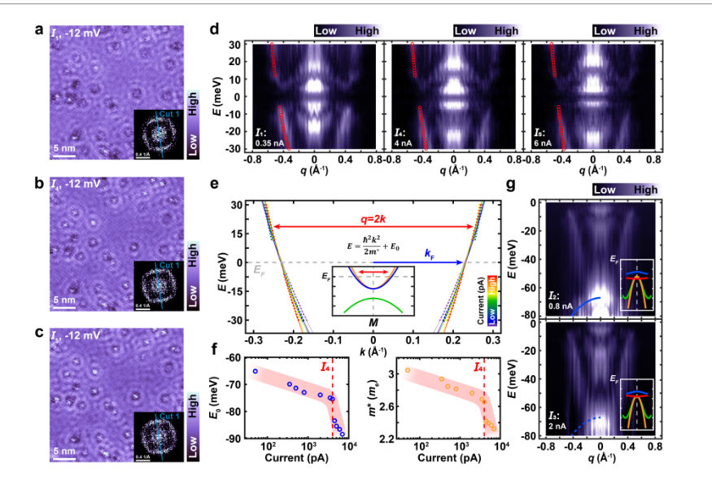
<figcaption class="paper-figure-caption"><b>Fig 2.</b> Figure 2. Band reconstruction under different tunneling currents revealed by quasiparticle interference. (a)-(c) Real space dI/dV maps acquired at -12 mV under different tunneling currents (30 nm × 30 nm; set point, V = 30 mV, I1 = 0.35 nA, I4 = 4 nA, I5 = 6 nA). Insets: Fast Fourier transformation of the corresponding real-space dI/dV maps. Cut 1 denote the Γ-M direction (figure 1(a)). (d) Energy-dependent line profiles along Cut 1, from -30 mV to 30 mV. Additional dI/dV maps and their corresponding FFT images at different energies are provided in Supplementary Material figure S5-7. Red circles mark the scattering wave vectors obtained from the normal state quasiparticle interference....</figcaption>
</figure>
<figure class="paper-figure-card">
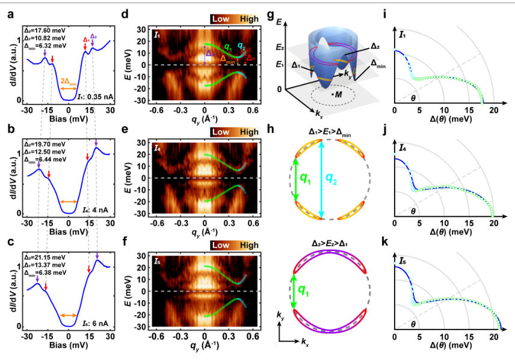
<figcaption class="paper-figure-caption"><b>Fig 3.</b> Figure 3. Bogoliubov quasiparticle interference in monolayer FeSe/STO under different tunneling currents. (a)-(c) Typical dI/dV spectra of the superconducting gap obtained under the same tunneling currents as in figure 2(a)-(c) (set point, V = 30 mV, I1 = 0.35 nA, I4 = 4 nA, I5 = 6 nA). Red, purple and orange arrows highlight the inner superconducting gap (Δ1), outer superconducting gap (∆2) and gap minimum (Δmin), respectively. Dashed gray lines track the evolution of superconducting gap Δ1 and ∆2. (d)-(f) Energy-dependent line profiles along Cut 1 in the insets of figure 2(a)-(c), showing clear Bogoliubov quasiparticle dispersions under different tunneling currents. The BQPI wave vectors...</figcaption>
</figure>
<figure class="paper-figure-card">
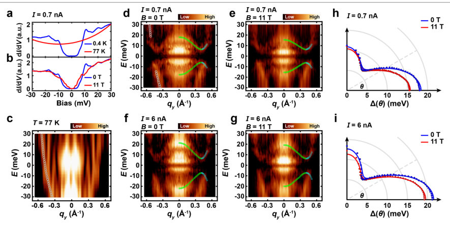
<figcaption class="paper-figure-caption"><b>Fig 4.</b> Figure 4. Temperature and magnetic field response of Bogoliubov quasiparticle interference in monolayer FeSe/STO. (a) dI/dV spectra at 0.7 nA under different temperatures. Spectra in (a) were measured with the setpoint of 0.7 nA (V = 30 mV), under different temperature of 0.4 K and 77 K, respectively. (b) dI/dV spectra at 0.7 nA under B = 0 T and 11 T. Spectra in (b) were measured with the setpoint of 0.7 nA (V = 30 mV), under perpendicular magnetic fields of 0 T and 11 T, respectively. (c) Energy-dependent line profiles along Cut 1 at 77 K (set point, V = 30 mV, I = 2 nA). Gray circles mark the scattering wave vectors obtained from the normal state quasiparticle interference. (d)-(g),...</figcaption>
</figure>
<figure class="paper-figure-card">
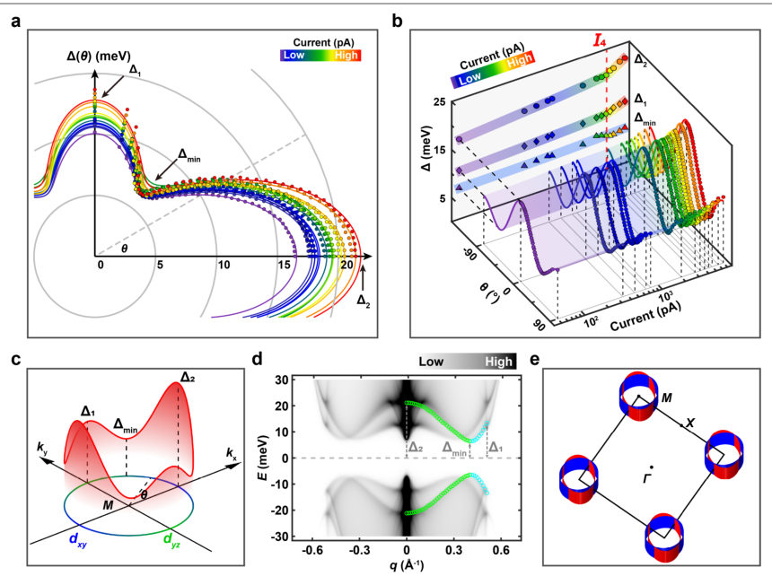
<figcaption class="paper-figure-caption"><b>Fig 5.</b> Figure 5. Tip-tunable superconducting gap anisotropy in monolayer FeSe/STO. (a) Polar plots of the angular-dependent superconducting gaps extracted from BQPI wave vectors q1 and q2 in figure 3(d)-(f) and Supplementary Material figure S12 under different tunneling currents, represented by colored dots. Solid curves are gap fittings using Eq. (1). Δ1 and Δ2 correspond to two local gap maxima, while Δmin is the gap minimum. (b) The three-dimensional plot of current-dependent gap magnitudes. Two local gap maxima (Δ1 and Δ2) and the gap minimum (Δmin) of the fitted curves are projected onto the Δ-current plane. The colored guidelines track the evolution of Δ1 and Δ2, exhibiting a clear...</figcaption>
</figure>
</div>
<p><strong>Summary.</strong> This research demonstrates that deep-lying electronic bands, specifically the $d_{z^2}$ band in iron-based superconductors, can enhance superconductivity. By applying strain via STM, the authors induce hybridization between this deep band and the superconducting bands, which is confirmed through momentum-resolved measurements like BQPI. This establishes 'deep-band engineering' as a powerful design principle for superconducting materials.</p>
<p><strong>Why it may be interesting.</strong> This work provides a concrete, experimentally verifiable mechanism (band hybridization) for optimizing superconductivity in correlated materials, which is highly relevant to understanding pairing mechanisms beyond simple Fermi-surface considerations.</p>
<details>
<summary>Detailed structure</summary>
<p><strong>Main problem.</strong> To refine the understanding of iron-based superconductivity by demonstrating that deep-lying electronic bands, specifically the $d_{z^2}$ band, can enhance the superconducting pairing strength.</p>
<p><strong>Main result.</strong> The upward tuning of the deep $d_{z^2}$ band via strain causes hybridization with primary superconducting bands, leading to a measurable and significant enhancement of the superconducting gap.</p>
<p><strong>Method.</strong> The study combines Scanning Tunneling Microscopy (STM) measurements—including current-dependent $dI/dV$ and Bogoliubov QPI (BQPI)—with theoretical DFT calculations to probe electronic structure changes.</p>
<p><strong>Model / system.</strong> The system is monolayer FeSe/SrTiO3, an iron-based superconductor. The analysis focuses on the electronic structure evolution, particularly the hybridization between the deep $d_{z^2}$ band and the Fermi-level active bands ($d_{xy}$, $d_{xz}/d_{yz}$), under applied strain.</p>
<p><strong>Key observables.</strong> Superconducting gap size ($\Delta$), band energy shifts ($d_{z^2}$ band), hybridization evidence (QPI/BQPI patterns), and the anisotropic gap function $\Delta(	heta)$.</p>
<p><strong>Important parameters / regimes.</strong> Tunneling current ($I_t$) used to induce strain, temperature ($0.4 	ext{ K}$ to $77 	ext{ K}$), and magnetic field ($0 	ext{ T}$ to $11 	ext{ T}$).</p>
<p><strong>Assumptions / limitations.</strong> The primary mechanism for gap enhancement is attributed to the hybridization between the deep $d_{z^2}$ band and the pairing-active bands, which is confirmed by momentum-resolved measurements.</p>
<p><strong>Figures summary.</strong> Figures illustrate band structure evolution via $dI/dV$ spectra, QPI patterns showing band reconstruction, and BQPI measurements confirming the superconducting gap and its anisotropy under varying conditions.</p>
<p><strong>Paper structure.</strong> The paper progresses from identifying the limitation of conventional band models to using STM/QPI to observe strain-induced band shifts, linking these shifts to hybridization, and finally quantifying the resulting superconducting gap enhancement using BQPI.</p>
</details>
<details>
<summary>Abstract</summary>
<p>Conventional understanding of iron-based superconductivity is usually established based on electronic bands at the Fermi level, leaving deeper bands overlooked as potential factor. Here, we expand this view by demonstrating that a deep-lying dz2 band below the Fermi level can be employed to enhance the superconducting paring strength. By using scanning tunneling microscope to mechanically change the crystal lattice of an iron-based superconductor, we observe an upward shift of the deep-lying dz2 band related feature, leading to hybridization with the primary superconducting bands at the Fermi level. We visualize the novel evidence of this band hybridization and resulting enhanced superconducting gap through quasiparticle interference imaging, providing conclusive evidence that engineering such correlations between deep and pairing-active bands is a potent mechanism for amplifying the superconducting gap. This work refines the conventional view of pairing-relevant electronic structures and establishes band hybridization as an effective way to optimize superconducting materials.</p>
</details>
<p><sub><a href="#top">↑ back to top</a></sub></p>

<p><a id="paper-2610.11868"></a></p>
<h3 id="from-majorana-to-bloch-two-ways-to-generalize-the-bloch-sphere-representation"><a href="http://arxiv.org/abs/2610.11868v1">From Majorana to Bloch: two ways to generalize the Bloch sphere representation</a></h3>
<p><strong>Authors:</strong> Louis Hanotel<br>
<strong>Type:</strong> theory · <strong>Category:</strong> quantum information and computing · <strong>PDF:</strong> <a href="https://arxiv.org/pdf/2610.11868v1">https://arxiv.org/pdf/2610.11868v1</a><br>
<strong>Analysis basis:</strong> full PDF text, analyzed in chunks</p>
<div class="figure-strip-hint">↔ Scroll figures horizontally</div>
<div class="paper-figures-scroll">
<figure class="paper-figure-card">
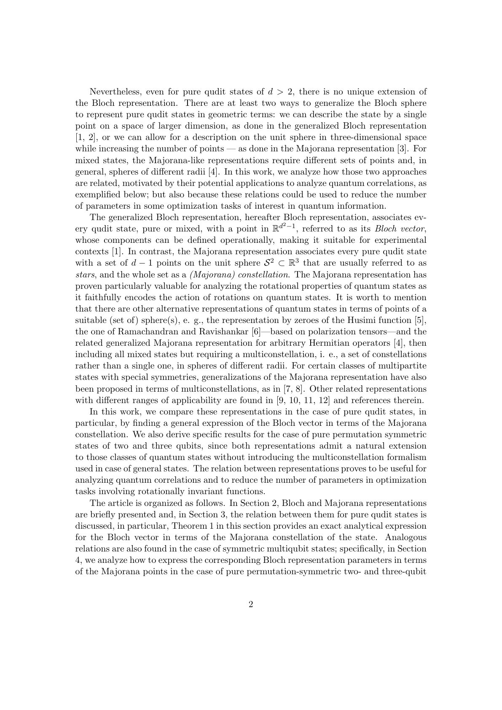
<figcaption class="paper-figure-caption"><b>Fig 1.</b> Low-resolution page preview, page 2</figcaption>
</figure>
<figure class="paper-figure-card">
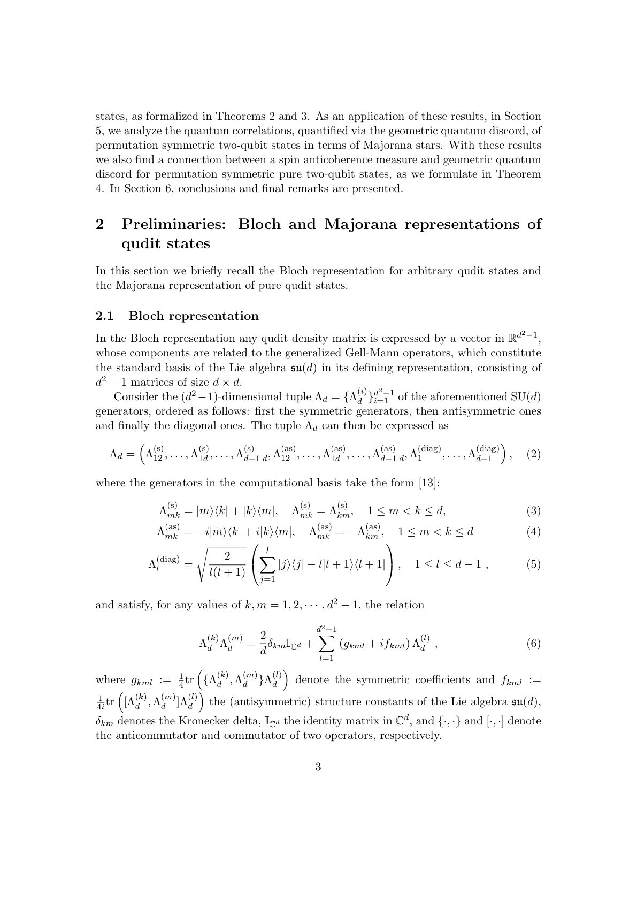
<figcaption class="paper-figure-caption"><b>Fig 2.</b> Low-resolution page preview, page 3</figcaption>
</figure>
<figure class="paper-figure-card">
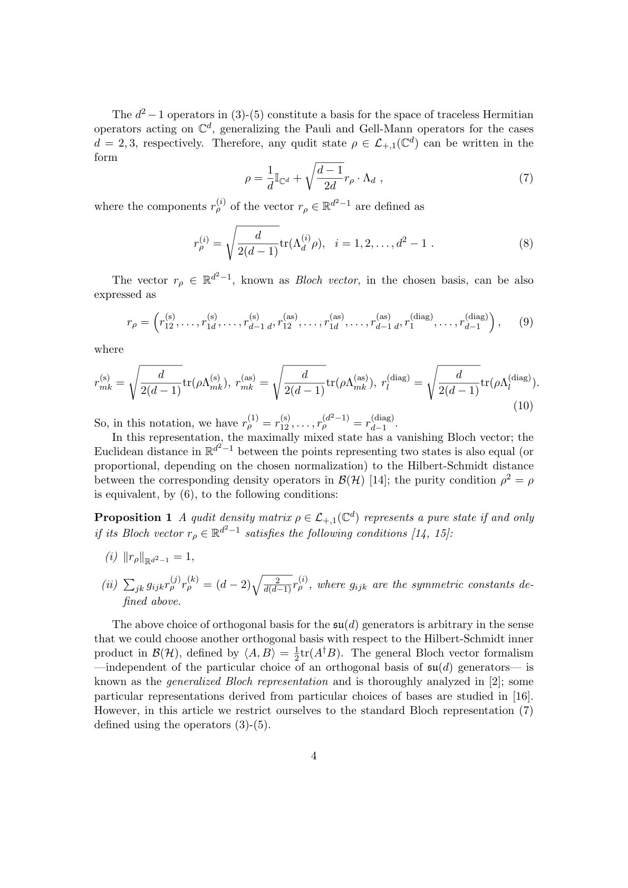
<figcaption class="paper-figure-caption"><b>Fig 3.</b> Low-resolution page preview, page 4</figcaption>
</figure>
<figure class="paper-figure-card">
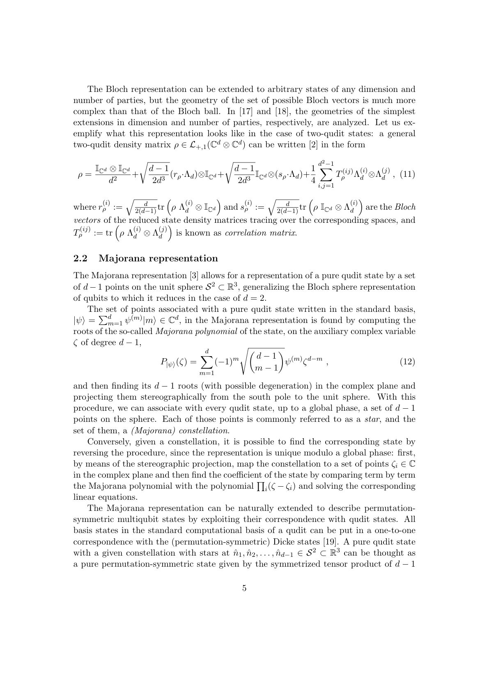
<figcaption class="paper-figure-caption"><b>Fig 4.</b> Low-resolution page preview, page 5</figcaption>
</figure>
<figure class="paper-figure-card">
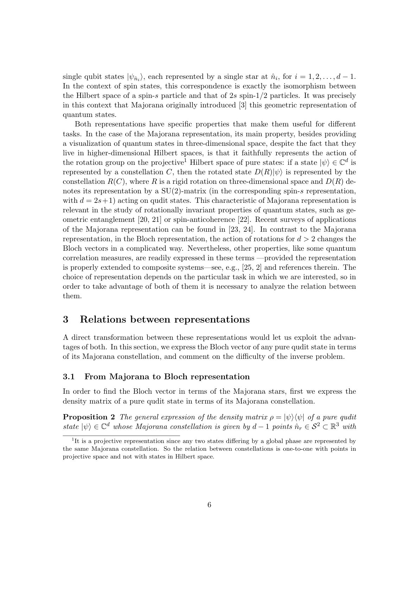
<figcaption class="paper-figure-caption"><b>Fig 5.</b> Low-resolution page preview, page 6</figcaption>
</figure>
</div>
<p><strong>Summary.</strong> This paper compares two distinct geometric methods—the generalized Bloch vector and the Majorana constellation—used to represent pure qudit quantum states. By establishing explicit mathematical links between these representations, the authors provide a unified geometric tool to analyze quantum correlations, particularly demonstrating a quantitative relationship between geometric quantum discord and 1-anticoherence for two-qubit systems.</p>
<p><strong>Why it may be interesting.</strong> It provides a powerful geometric framework for understanding quantum correlations in multi-qubit systems, linking abstract algebraic structures (like $\mathfrak{su}(d)$ generators) to intuitive geometric concepts (like points on a sphere).</p>
<details>
<summary>Detailed structure</summary>
<p><strong>Main problem.</strong> The Bloch sphere representation for quantum states is not unique when generalized to qudit systems ($d>2$), necessitating a comparison between different geometric representations.</p>
<p><strong>Main result.</strong> The authors derive explicit analytical relations connecting the Bloch vector representation to the Majorana constellation representation for pure qudit states, and apply this to quantify quantum correlations in two-qubit systems.</p>
<p><strong>Method.</strong> The work involves comparing two geometric representations—the Bloch vector in $\mathbb{R}^{d^2-1}$ and the Majorana constellation on $S^2$—by deriving general formulas linking their respective coordinates.</p>
<p><strong>Model / system.</strong> The focus is on pure qudit states ($
ho \in L_{+,1}(\mathbb{C}^d)$) and, specifically, pure permutation-symmetric two- and three-qubit states. The analysis uses density operators and their geometric characterizations.</p>
<p><strong>Key observables.</strong> Bloch vector components ($\mathbf{r}_
ho$), Majorana constellation points, and quantum correlation measures like geometric quantum discord ($  ext{DG}(
ho)$) and 1-anticoherence ($ ext{AV}_1$).</p>
<p><strong>Important parameters / regimes.</strong> The dimension $d$ of the qudit system, and for two-qubit states, the separation angle $\alpha$ defining the Majorana constellation.</p>
<p><strong>Assumptions / limitations.</strong> The comparison relies on the existence of analytical relations between the two representations, though the inverse mapping (Majorana $   o$ Bloch) is noted as difficult for large $d$.</p>
<p><strong>Figures summary.</strong> Not specified, but the notes indicate the derivation of explicit formulas (Theorems 1 &amp; 2) relating the two representations and the calculation of $   ext{DG}(
ho_\alpha)$ as a function of $\alpha$.</p>
<p><strong>Paper structure.</strong> The paper first introduces the limitations of generalizing the Bloch sphere, then details the Majorana representation, followed by deriving the explicit mathematical relations between the two formalisms, and finally applying these relations to calculate quantum correlations for specific symmetric multi-qubit states.</p>
</details>
<details>
<summary>Abstract</summary>
<p>While the Bloch sphere provides a canonical geometric representation for qubits, its generalization to pure qudit states ($d>2$) is not unique. This representation can be extended following two different approaches: increasing the number of points, as in the Majorana representation, or using a single point but in a space of larger dimension, as in the generalized Bloch representation. In this work, we compare these representations of pure qudit states by finding explicit analytical relations between them. In particular, a general formula of the Bloch vector in terms of the Majorana points of a given state is provided. We also analyze some suitable extensions of these representations in the case of pure permutation-symmetric two- and three-qubit states, deriving the corresponding relation between them. These analytical results allow us to study, from a geometric point of view, quantum correlations of special classes of two-qubit states.</p>
</details>
<p><sub><a href="#top">↑ back to top</a></sub></p>

<p><a id="paper-2610.10948"></a></p>
<h3 id="geometry-optimized-hyperbolic-codes-for-modular-fault-tolerant-quantum-architectures"><a href="http://arxiv.org/abs/2610.10948v1">Geometry-optimized hyperbolic codes for modular fault-tolerant quantum architectures</a></h3>
<p><strong>Authors:</strong> Ahmed Adel Mahmoud, Steven Rayan<br>
<strong>Type:</strong> theory · <strong>Category:</strong> quantum information and computing · <strong>PDF:</strong> <a href="https://arxiv.org/pdf/2610.10948v1">https://arxiv.org/pdf/2610.10948v1</a><br>
<strong>Analysis basis:</strong> full PDF text, analyzed in chunks</p>
<div class="figure-strip-hint">↔ Scroll figures horizontally</div>
<div class="paper-figures-scroll">
<figure class="paper-figure-card">
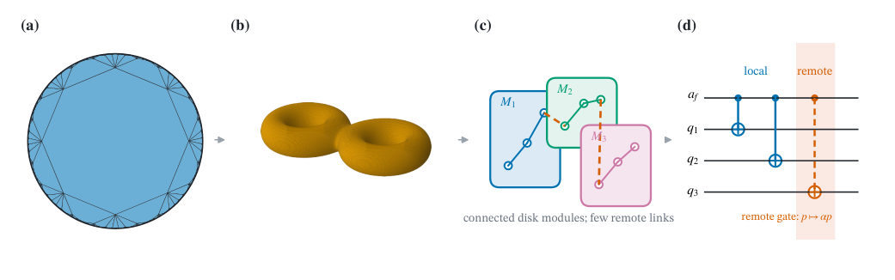
<figcaption class="paper-figure-caption"><b>Fig 1.</b> FIG. 1. From code geometry to hardware implementation. (a) A regular {8, 8} tiling in the Poincar´e disk model, illustrating the self-dual tilings studied here. (b) A schematic closed genus-two surface illustrating imposing periodic boundary conditions; the computed codes generally have much larger genus. (c) A modular realization with connected planar regions and inter-module links. (d) A measurement circuit distinguishing local and remote gates. Assigning qubits to modules changes the physical organization of interactions while preserving the hyperbolic code’s parameters.</figcaption>
</figure>
<figure class="paper-figure-card">
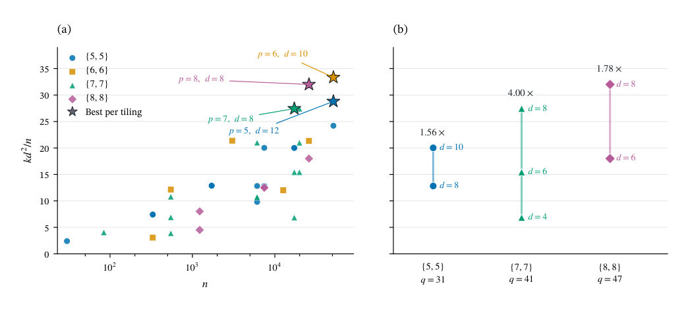
<figcaption class="paper-figure-caption"><b>Fig 2.</b> FIG. 2. Code efficiency and the role of periodic identifications. (a) Code efficiency kd2/n versus physical-qubit count n for all 38 classes in the exhaustive search over p = 5, 6, 7, 8 and prime q &lt; 60, within the specified regular generator-swap-self-dual PSL(2, q) construction. Colors and marker shapes distinguish the tilings; stars identify the maximum-efficiency code for each tiling. Classes with identical plotted parameters overlap. (b) Largest best-to-worst efficiency ratios at fixed tiling and quotient size within each family exhibiting variation in the searched class. Within each group, n, k, and check weight remain fixed. Point labels give distances; factors give ηmax/ηmin =...</figcaption>
</figure>
<figure class="paper-figure-card">
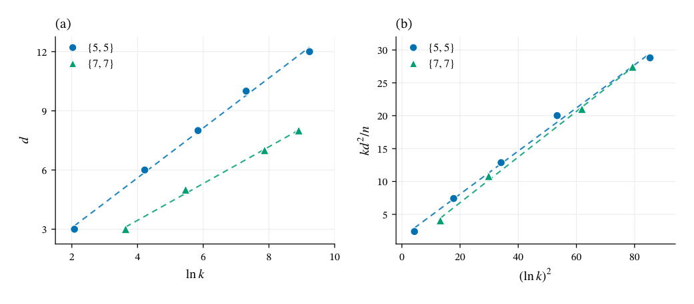
<figcaption class="paper-figure-caption"><b>Fig 3.</b> FIG. 3. Finite-size growth of the selected {5, 5} and {7, 7} code sequences from the prime-field search with q &lt; 60. (a) Code distance d versus ln k. (b) Code efficiency kd2/n versus (ln k)2. Each sequence retains the smallest code attaining a new maximum distance within its tiling and the searched class. Dashed lines show ordinary least-squares fits with intercepts, using the five {5, 5} code instances and four {7, 7} code instances presented in Table II.</figcaption>
</figure>
<figure class="paper-figure-card">
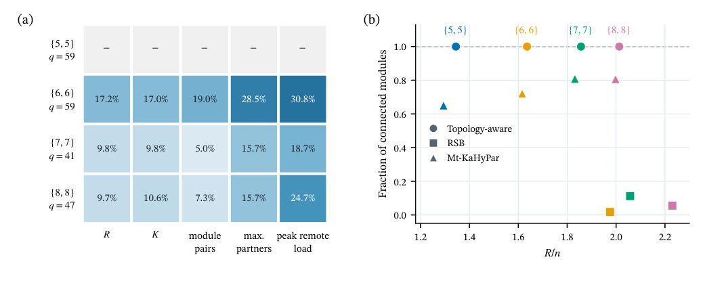
<figcaption class="paper-figure-caption"><b>Fig 4.</b> FIG. 4. Communication cost and connectivity constraints for the four code instances in Table III. (a) Percentage reduction of the reference topology-aware layout relative to RSB, calculated for a metric X as 100(XRSB −Xtop)/XRSB. Rows identify codes by tiling, while columns represent the five communication metrics: R, K, the number of communicating module pairs, the maximum number of communication partners, and the maximum remote-interaction count. Dashes mark the {5, 5}, q = 59 case, for which RSB produced no valid capacity assignment in five attempted initializations. (b) Remote interactions per data qubit, R/n, and the fraction of modules with connected induced interaction graphs. Colors...</figcaption>
</figure>
<figure class="paper-figure-card">
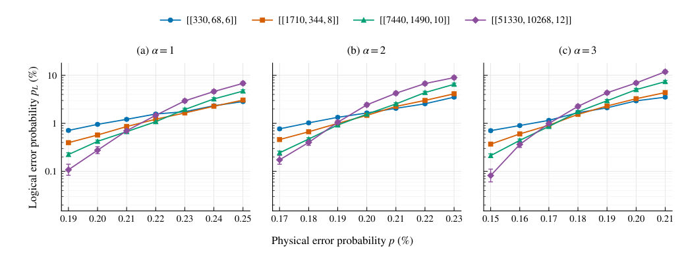
<figcaption class="paper-figure-caption"><b>Fig 5.</b> FIG. 5. Logical error probability pL for a selected logical Z memory in the effective-modular {5, 5} architecture, after d syndrome rounds. Panels (a)–(c) apply α = 1, 2, 3 to inter-module CNOT error probabilities. Each curve contains seven measured points. Error bars are nominal pointwise 95% Wilson intervals. Finite-size threshold estimates are 0.22%, 0.19%, and 0.17%, respectively.</figcaption>
</figure>
</div>
<p><strong>Summary.</strong> This paper proposes using hyperbolic surface codes as highly efficient candidates for fault-tolerant quantum computation. By optimizing the code structure on higher-genus surfaces, the authors show a superior scaling of code efficiency compared to standard Euclidean codes. The work also provides a practical framework for routing these complex codes into modular, implementable architectures.</p>
<p><strong>Why it may be interesting.</strong> The focus on geometric optimization and scaling laws for error correction codes is highly relevant to theoretical quantum information scientists designing next-generation quantum hardware.</p>
<details>
<summary>Detailed structure</summary>
<p><strong>Main problem.</strong> The primary challenge is achieving fault tolerance in quantum computing by optimizing complex trade-offs between code parameters like encoding rate, code distance, and routing.</p>
<p><strong>Main result.</strong> The authors demonstrate that hyperbolic surface codes can achieve optimal efficiency scaling $kd^2/n = C(\log k)^2$, significantly improving upon the constant bound of Euclidean codes.</p>
<p><strong>Method.</strong> The work involves constructing finite families of hyperbolic surface codes on higher-genus Riemann surfaces, optimizing periodic identifications, and developing a topology-aware algorithm for modular routing.</p>
<p><strong>Model / system.</strong> The model is the hyperbolic surface code, which is defined on closed, higher-genus Riemann surfaces derived from regular hyperbolic tilings (e.g., $\{p, p\}$).</p>
<p><strong>Key observables.</strong> Code efficiency ($\eta = kd^2/n$), error-correction thresholds, and logical error probability ($p_L$).</p>
<p><strong>Important parameters / regimes.</strong> Code distance ($d$), encoding rate ($k/n$), and the genus of the surface.</p>
<p><strong>Assumptions / limitations.</strong> The analysis assumes the ability to construct and manage codes on hyperbolic geometries and that the modular partitioning algorithm effectively mitigates long-range communication overheads.</p>
<p><strong>Figures summary.</strong> Figures illustrate the transition from hyperbolic tiling geometry (Poincaré disk) to hardware realization, showing modular partitioning and the scaling of code efficiency ($\eta$ vs $n$).</p>
<p><strong>Paper structure.</strong> The paper progresses from identifying the need for better scaling beyond Euclidean codes, to presenting the mathematical construction of hyperbolic codes, optimizing their parameters via periodic identifications, and finally addressing the practical implementation hurdles like routing and simulating error thresholds.</p>
</details>
<details>
<summary>Abstract</summary>
<p>Quantum fault tolerance is a prerequisite to harness the full potential of quantum computers. However, achieving fault tolerance remains a major challenge since it requires optimizing tradeoffs between several intertwined theoretical and experimental parameters, including the encoding rate, code distance, parity-check weights, code planarity, and routing. Surface codes remain strong candidates for fault tolerance due to their simple geometric structure, established decoding methods, locality, and experimental attainability. In this work, we present finite families of hyperbolic surface codes that leverage the optimal efficiency scaling $kd^2/n = C (\log{k})^2$ attainable by surface codes with bounded local geometry. We show that optimizing the periodic identifications can double the code distance and thereby increase the code's efficiency by a factor of four, at fixed qubit count, encoding rate, and parity-check weight. We also address the routing problem of hyperbolic surface codes by introducing a topology-aware algorithm that partitions a hyperbolic code into bounded planar modules while reducing long-range communications demand. Circuit-level Monte Carlo simulations yield finite-size threshold estimates for both modular and monolithic layouts, showing that tripling the long-range gate error probability mildly lowers, but does not eliminate, the estimated error-correction thresholds. Together, these results strengthen the case for hyperbolic surface codes as structured and highly efficient large-scale quantum error correction codes for future fault-tolerant architectures.</p>
</details>
<p><sub><a href="#top">↑ back to top</a></sub></p>

<p><a id="paper-2610.11225"></a></p>
<h3 id="high-rate-concatenated-quantum-error-correcting-codes-for-qudits"><a href="http://arxiv.org/abs/2610.11225v1">High-Rate Concatenated Quantum Error-Correcting Codes for Qudits</a></h3>
<p><strong>Authors:</strong> Takanori Nishi, Hayato Goto<br>
<strong>Type:</strong> theory · <strong>Category:</strong> quantum information and computing · <strong>PDF:</strong> <a href="https://arxiv.org/pdf/2610.11225v1">https://arxiv.org/pdf/2610.11225v1</a><br>
<strong>Analysis basis:</strong> full PDF text, analyzed in chunks</p>
<div class="figure-strip-hint">↔ Scroll figures horizontally</div>
<div class="paper-figures-scroll">
<figure class="paper-figure-card">
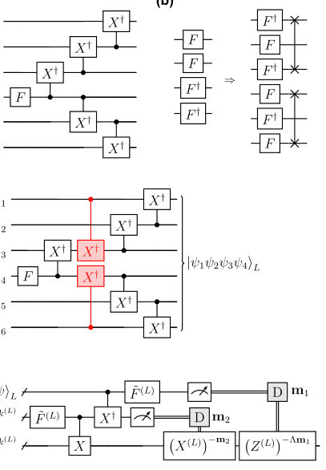
<figcaption class="paper-figure-caption"><b>Fig 1.</b> FIG. 1. (a) Zero-state encoder of the [[6, 4, 2]]q code. (b) Level-1 logical Fourier gate. (c) Arbitrary-state encoder, where additional SUM† gates are highlighted in red. (d) Error-correcting teleportation for qudit MHC codes.</figcaption>
</figure>
<figure class="paper-figure-card">
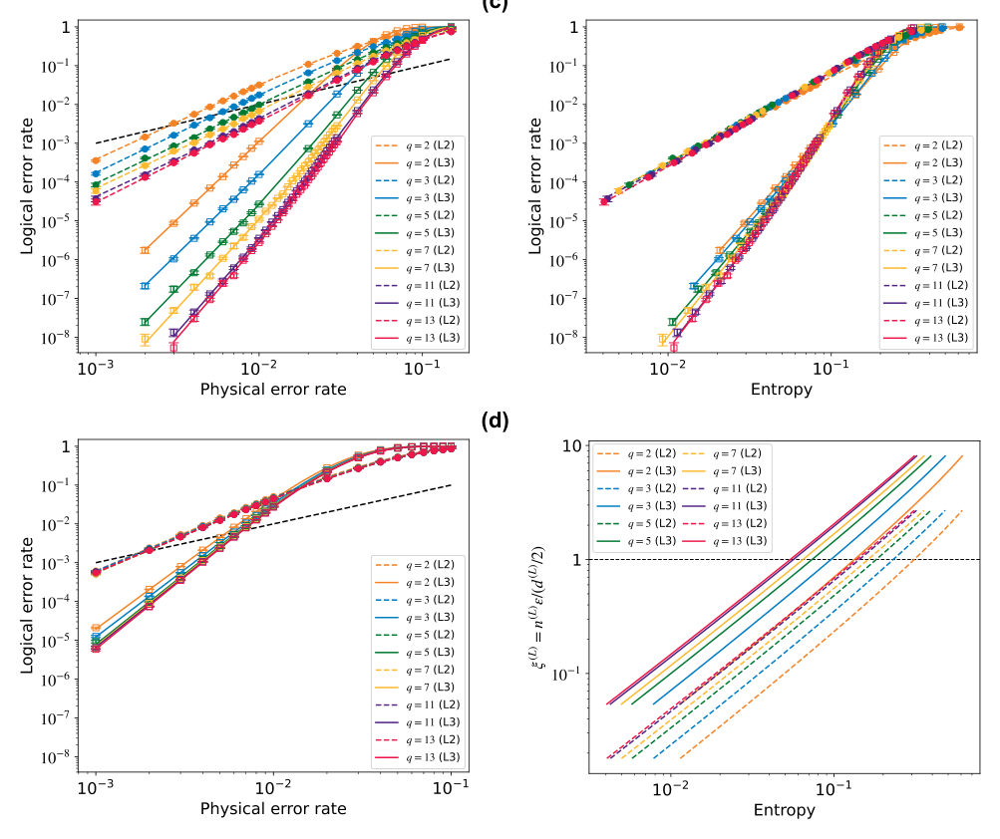
<figcaption class="paper-figure-caption"><b>Fig 2.</b> FIG. 2. Code-capacity performance, entropy scaling, and typical-error-weight analysis of qudit MHC codes under the X-error model. (a) Code-capacity performance obtained with the LLMD decoder. (b) Code-capacity performance obtained with the HD decoder. (c) Logical error rate for the LLMD decoder replotted as a function of the q-ary entropy Hq using the same data as in (a). (d) Ratio of the typical error weight to one-half of the code distance as a function of Hq. Colors indicate the local dimension q. In (a)–(d), dashed and solid curves correspond to the level-2 and level-3 concatenation, respectively. In (a) and (b), thresholds are defined by the crossing points of the level-2 and level-3...</figcaption>
</figure>
</div>
<p><strong>Summary.</strong> This work extends high-rate concatenated quantum error-correcting codes, known as MHC codes, from qubits to qudits of prime dimension q. By analyzing the code performance in a qudit X-error model, the authors show that increasing the local dimension significantly boosts the error threshold and improves error suppression scaling. This research strongly motivates the development of qudit-based architectures for fault-tolerant quantum computation.</p>
<p><strong>Why it may be interesting.</strong> The demonstration of a significantly enhanced error threshold and the identification of a 'waterfall regime' using qudits provides a concrete, theoretically motivated path toward improving the fault tolerance of quantum computation architectures.</p>
<details>
<summary>Detailed structure</summary>
<p><strong>Main problem.</strong> The paper addresses the need for efficient Fault-Tolerant Quantum Computation (FTQC) by extending high-rate concatenated quantum error-correcting codes from qubits to qudits of prime dimension q.</p>
<p><strong>Main result.</strong> The error threshold for these qudit codes increases monotonically with the local dimension q, reaching 10.0% for q=13 (nearly double the qubit value), and exhibits a pronounced 'waterfall regime' for large q.</p>
<p><strong>Method.</strong> The authors construct level-2 and level-3 Many-Hypercube (MHC) codes for qudits and generalize the level-by-level minimum-distance (LLMD) decoder for evaluation in a qudit X-error model.</p>
<p><strong>Model / system.</strong> The system involves qudits (quantum systems with dimension q) and the application of concatenated MHC codes. The analysis is performed under a qudit X-error model, focusing on prime dimensions q up to 13.</p>
<p><strong>Key observables.</strong> Error threshold, logical error rate ($\epsilon_L$), code-capacity performance, and the entropy of the underlying q-ary noise channel ($H_q$).</p>
<p><strong>Important parameters / regimes.</strong> Local dimension q (prime), code levels (2 and 3), and the physical error rate $\epsilon$.</p>
<p><strong>Assumptions / limitations.</strong> The analysis assumes q is a prime dimension and focuses on the X-error model; the decoding process involves computationally restricted searches to manage combinatorial complexity.</p>
<p><strong>Figures summary.</strong> Figures illustrate the encoding process, logical gates, and show the code-capacity performance and the logical error rate dependence on the noise entropy $H_q$.</p>
<p><strong>Paper structure.</strong> The paper first establishes the qudit framework and MHC code construction, followed by large-scale stabilizer simulations to show threshold enhancement, and concludes with an entropy analysis to explain the observed qudit advantage.</p>
</details>
<details>
<summary>Abstract</summary>
<p>Qudits provide a larger local Hilbert space than qubits and have recently attracted interest as building blocks for efficient fault-tolerant quantum computation (FTQC). In this work, we extend many-hypercube (MHC) codes, high-rate concatenated quantum codes, from qubits to qudits of prime dimension $q$. We construct the level-2 and level-3 MHC codes with parameters $\left[\!\left[6^2,4^2,2^2\right]\!\right]_q$ and $\left[\!\left[6^3,4^3,2^3\right]\!\right]_q$, respectively, and generalize the level-by-level minimum-distance (LLMD) decoder originally proposed for the qubit MHC codes. In a qudit $X$-error model, we evaluate the code-capacity performance of the qudit MHC codes for dimensions up to $q=13$. We find that the error threshold increases monotonically with the local dimension $q$, reaching $10.0\%$ for $q=13$, nearly double the value of $5.1\%$ for qubits. Furthermore, for sufficiently large local dimensions, we observe a pronounced waterfall regime in which the logical error rate decreases substantially faster than expected from conventional distance-based estimates. To understand the origin of the observed qudit advantage, we analyze the decoding performance in terms of the entropy of the underlying $q$-ary noise channel. This analysis reveals a competition between the increased syndrome information available at larger $q$ and the simultaneous growth of the typical physical error weight at fixed entropy. These results demonstrate that higher-dimensional quantum systems can substantially improve the performance of high-rate concatenated quantum codes and motivate further development of qudit-based FTQC architectures.</p>
</details>
<p><sub><a href="#top">↑ back to top</a></sub></p>

<p><a id="paper-2610.12426"></a></p>
<h3 id="lyapunov-spectrum-of-random-neural-networks"><a href="http://arxiv.org/abs/2610.12426v1">Lyapunov spectrum of random neural networks</a></h3>
<p><strong>Authors:</strong> David G. Clark<br>
<strong>Type:</strong> theory · <strong>Category:</strong> disordered systems and neural networks · <strong>PDF:</strong> <a href="https://arxiv.org/pdf/2610.12426v1">https://arxiv.org/pdf/2610.12426v1</a><br>
<strong>Analysis basis:</strong> full PDF text, analyzed in chunks</p>
<div class="figure-strip-hint">↔ Scroll figures horizontally</div>
<div class="paper-figures-scroll">
<figure class="paper-figure-card">
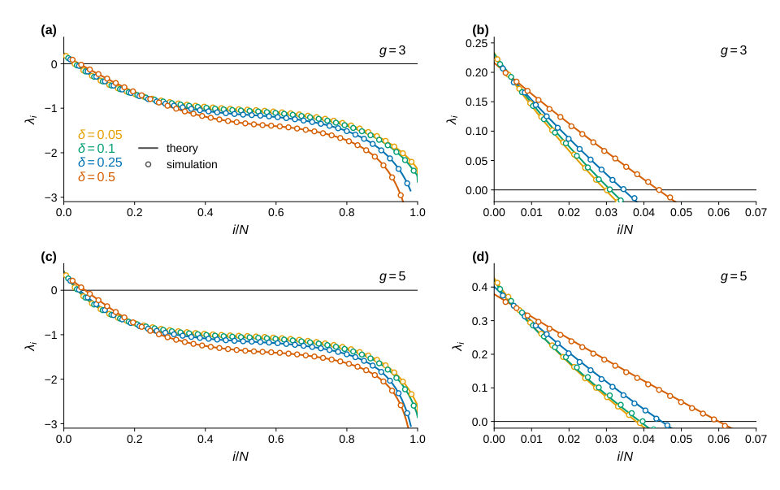
<figcaption class="paper-figure-caption"><b>Fig 1.</b> FIG. 1. Lyapunov spectra for δ = 0.05, 0.1, 0.25, and 0.5, with the legend in (a) for all panels. The exponents λi are plotted against the rank fraction i/N. Lines show the single-site theory, Eq. (67), as s against 1−F(s), ending at the upper edge s∗(Appendix B.2), and dots show simulations of one network with N = 4096. (a) Full Lyapunov spectra for g = 3, with dots for every 100th Lyapunov exponent. (b) Positive Lyapunov exponents of (a), enlarged, with dots for every ∼10th Lyapunov exponent. (c) Same as (a) for g = 5. (d) Same as (b) for g = 5.</figcaption>
</figure>
<figure class="paper-figure-card">
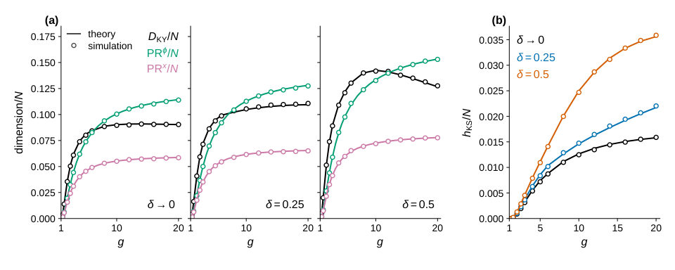
<figcaption class="paper-figure-caption"><b>Fig 2.</b> FIG. 2. Attractor dimension, participation-ratio dimensions, and entropy rate as functions of the coupling strength g, with the line and marker legend in (a) for both panels. Lines show theory, and dots show simulations with N = 4096 (the median over five larger networks near the onset of chaos) for DKY/N and hKS/N and the mean over two networks with N = 16384 for PRϕ/N and PRx/N (Appendix D.2). (a) Kaplan–Yorke dimension DKY/N, Eq. (68), and participation ratios PRϕ/N and PRx/N, Eq. (71), for δ →0, 0.25, and 0.5 (left to right). The theory is the single-site theory for DKY/N and the two-site cavity theory (Appendix C) for PRϕ/N and PRx/N. (b) Entropy rate hKS/N, Eq. (69), for δ →0, 0.25,...</figcaption>
</figure>
<figure class="paper-figure-card">

<figcaption class="paper-figure-caption"><b>Fig 3.</b> Figure 2 shows the attractor dimension and the participation ratios (Fig. 2a) and the entropy rate (Fig. 2b) as functions of g for several time steps δ. The theory and the simulations again agree closely. At every time step, the two participation ratios and the entropy rate increase monotonically with g over the range of g shown, and the participation ratios grow more slowly at strong coupling, as also found numerically by Engelken et al. [22]. The attractor dimension saturates at strong coupling and, as found numerically [22], eventually decreases. Over the range of g shown, this decrease is visible at δ = 0.5, where the attractor dimension has a maximum near g = 10.</figcaption>
</figure>
<figure class="paper-figure-card">

<figcaption class="paper-figure-caption"><b>Fig 4.</b> FIG. 3. Trivial fixed point, g = 0.8. (a) Eigenvalues µi of J for one network with N = 2000 (dots), the circle |µ| = g, and the circle |µ −cδ| = rs for δ = 0.5 and s = −0.6. Shading marks the overlap region of the disks |µ| &lt; g and |µ −cδ| &lt; rs, Eq. (A.5). The point µ(θ) = cδ + rseiθ moves along the circle |µ −cδ| = rs as θ varies. The thick arc, where |µ(θ)| &lt; g, is the band of frequencies |ˆL(θ)|2 &lt; γs of the single-site solution (Appendix A.2.1). (b) Circles |µ −cδ| = rs for δ = 0.5, 0.2, and 0.05 at s = −0.6, with the legend in the panel, and the eigenvalues and the circle |µ| = g as in (a). As δ →0, the circle |µ −cδ| = rs approaches the line Re µ = 1 + s (dashed). (c) Cumulative...</figcaption>
</figure>
<figure class="paper-figure-card">

<figcaption class="paper-figure-caption"><b>Fig 5.</b> FIG. 4. Maximum Lyapunov exponent from the operator Ts, Eq. (B.8). (a) Low-lying spectrum of α−1 s Ts, whose eigenvalues have the same signs as those of Ts, as a function of s for g = 3 and δ = 0.5. The thick line shows the lowest value b(s) of the spectrum, and the thin lines show excited eigenvalues below the continuum (shading). The dashed line marks su = δ−1 log(1 −δ), and the filled circle marks the zero crossing s∗of b(s). The first excited eigenvalue crosses zero close to s = 0 (open circle), the finite-δ counterpart of the zero mode Cx′(τ) in (b). (b) Schrödinger problem of the limit δ →0, Eq. (B.13), for g = 3. The line labeled 1−g2Cd(τ) shows the potential of H, Eq. (B.11), and...</figcaption>
</figure>
</div>
<p><strong>Summary.</strong> This theoretical work determines the full Lyapunov spectrum for large random neural networks by mapping the problem onto a response function solvable via a cavity method. It proves that the network exhibits extensive chaos, providing fundamental, diffeomorphism-invariant properties of the dynamics. The methodology bridges concepts from statistical physics (cavity method) and dynamical systems theory (Lyapunov exponents).</p>
<p><strong>Why it may be interesting.</strong> The rigorous analytical determination of the full spectrum and the confirmation of extensive chaos in a complex, non-linear system provides deep insights into the information processing capacity and dynamical stability of large-scale artificial neural systems.</p>
<details>
<summary>Detailed structure</summary>
<p><strong>Main problem.</strong> The paper calculates the full Lyapunov spectrum of a nonlinear recurrent neural network with random asymmetric couplings in the thermodynamic limit ($N	o\infty$).</p>
<p><strong>Main result.</strong> The chaos in the network is established to be extensive, meaning key measures like the attractor dimension and entropy rate scale linearly with system size $N$.</p>
<p><strong>Method.</strong> The calculation employs a cavity method applied to a response function derived from a finite-$N$ identity relating the Lyapunov spectrum to the tangent-space dynamics.</p>
<p><strong>Model / system.</strong> The model is a random neural network (rate network) governed by discrete-time dynamics $x(n+1) = G(x(n))$, with couplings $J_{ij} \sim \mathcal{N}(0, g^2/N)$.</p>
<p><strong>Key observables.</strong> Lyapunov exponents ($\lambda_i$), Attractor Dimension ($D_{KY}$), Entropy Rate ($h_{KS}$), and the cumulative distribution function $F(s)$ of the exponents.</p>
<p><strong>Important parameters / regimes.</strong> System size $N$ (limit $N	o\infty$), coupling strength $g$, and time step $\delta$ (limit $\delta	o 0$ for continuous time).</p>
<p><strong>Assumptions / limitations.</strong> The derivation relies on the minimum-norm selection of the tangent trajectory and assumes the exchange of limits ($\lim_{N	o\infty}$ and $\lim_{	ext{regularization}	o 0}$).</p>
<p><strong>Figures summary.</strong> Figures illustrate the spectrum $F(s)$ vs $s$, the Schrödinger problem for the continuous-time limit, and the maximum Lyapunov exponent $\lambda_1$ as a function of coupling strength $g$.</p>
<p><strong>Paper structure.</strong> The paper first establishes the theoretical framework by relating the spectrum to a response function. It then uses the cavity method to compute this response function in the large-$N$ limit, culminating in the determination of the spectrum edge $s^*$ via single-site theory.</p>
</details>
<details>
<summary>Abstract</summary>
<p>The Lyapunov spectrum of a nonlinear recurrent neural network with random asymmetric couplings is calculated in the limit $N\to\infty$. The calculation is based on a finite-$N$ identity that expresses the cumulative distribution of Lyapunov exponents as a response function of the tangent-space dynamics, with the tangent trajectory selected by a minimum-norm condition rather than by an initial condition. A cavity method then determines this response function at large $N$ through a self-consistent single-site problem. This result establishes that the chaos in this network is extensive and gives access to diffeomorphism-invariant properties of the dynamics. This work was done in collaboration with the AI models GPT-6 Astra and Claude Opus 5.5.</p>
</details>
<p><sub><a href="#top">↑ back to top</a></sub></p>

<p><a id="paper-2610.11838"></a></p>
<h3 id="magnon-band-splitting-without-altermagnetism-in-cuf2"><a href="http://arxiv.org/abs/2610.11838v1">Magnon band splitting without altermagnetism in CuF2</a></h3>
<p><strong>Authors:</strong> Ioannis Rousochatzakis, Oleg Janson, Alexander A. Tsirlin<br>
<strong>Type:</strong> both · <strong>Category:</strong> strongly correlated electrons · <strong>PDF:</strong> <a href="https://arxiv.org/pdf/2610.11838v1">https://arxiv.org/pdf/2610.11838v1</a><br>
<strong>Analysis basis:</strong> full PDF text, analyzed in chunks</p>
<div class="figure-strip-hint">↔ Scroll figures horizontally</div>
<div class="paper-figures-scroll">
<figure class="paper-figure-card">

<figcaption class="paper-figure-caption"><b>Fig 1.</b> FIG. 1. Crystal structure of CuF2. (a) Experimental monoclinic form with layers of the CuF4 plaquettes. (b) Hypothetical tetragonal form with the ideal rutile structure. (c) Energy vs. volume calculated for both forms (minimum energy of the monoclinic form is chosen as zero energy). The lines show fits to the equation of state. (d) Stabilization of the tetragonal CuF2 on the MgF2 substrate. Red lines indicate shorter Cu–F bonds resulting in a staggered configuration of the d3z2−r2 orbitals. VESTA software [21] was used for crystal structure visualization.</figcaption>
</figure>
<figure class="paper-figure-card">

<figcaption class="paper-figure-caption"><b>Fig 2.</b> FIG. 2. Band structure of CuF2. Nonmagnetic GGA band structure (left) and the density of states (right) of CuF2. Contributions of Cu dx2−y2 and d3z2−r2 are high- lighted. Notation of high-symmetry k-vectors: Z=(0, −1</figcaption>
</figure>
<figure class="paper-figure-card">

<figcaption class="paper-figure-caption"><b>Fig 3.</b> FIG. 3. Crystal structure and minimal spin model of CuF2. Left: CuF4 squares (cyan) forming a square lattice in the bc plane. Projections of interplane interactions J+ b and J+ bc are shown, respectively, as red and yellow cylinders. Right: connectivity of magnetic planes. For clarity, only bonds con- necting the central Cu atom are shown. Relevant interplane interactions J+ b and J+ bc are shown as thick cylinders, their al- termagnetic counterparts J− b and J− bc as thin lines. Note the different mutual orientation of CuF4 plaquettes connected by (J+ b , J+ bc) and (J− b , J− bc).</figcaption>
</figure>
<figure class="paper-figure-card">

<figcaption class="paper-figure-caption"><b>Fig 4.</b> FIG. 4. Magnetic susceptibility of CuF2. Fits (lines) to the experimental magnetic susceptibility of CuF2 (circles). The refined parameters J1, g, and χ0 are provided in Table I. Bottom panel shows squared deviations. The vertical dashed line depicts the long-range magnetic ordering temperature.</figcaption>
</figure>
<figure class="paper-figure-card">

<figcaption class="paper-figure-caption"><b>Fig 5.</b> FIG. 5. Magnetization process and magnetic ground state of CuF2. (a) Field-dependent magnetization measurement at 2 K shows the absence of weak ferromagnetism. (b) Canted in-plane magnetic structure of CuF2 expected from our microscopic magnetic model. Weak ferromagnetic moment produced by spin canting is compensated by the opposite moment in the adjacent layer. Small arrows on the bonds show the site ordering convention (i →j) for the corresponding DM vector Dij. (c) Experimental neutron diffraction pattern [17] (wavelength 2.347 ˚A) along with the simulated patterns for the collinear magnetic structure from Ref. [17] and for the canted structure proposed in our work. Hash symbols indicate...</figcaption>
</figure>
</div>
<p><strong>Summary.</strong> This work investigates the magnetic state of CuF2, a material predicted to be an altermagnet. By combining DFT calculations with spin-wave theory, the authors demonstrate that the material exhibits a conventional antiferromagnetic order, not an altermagnetic one. The study provides detailed quantitative evidence regarding the role of DM interactions and the resulting magnon spectrum.</p>
<p><strong>Why it may be interesting.</strong> The detailed analysis of magnon dispersion and the explicit calculation of the chiral structure factor provide rigorous theoretical tools for distinguishing between different magnetic ground states in correlated insulators.</p>
<details>
<summary>Detailed structure</summary>
<p><strong>Main problem.</strong> To conclusively determine the magnetic state of CuF2 and rule out the possibility of altermagnetism, moving beyond simple symmetry arguments.</p>
<p><strong>Main result.</strong> The magnetic order in CuF2 is confirmed to be antiferromagnetic (AFM), not altermagnetic, due to a doubling of the magnetic unit cell. While DM interactions cause magnon splitting, these bands are non-chiral.</p>
<p><strong>Method.</strong> The study combines ab initio calculations (DFT/GGA) for electronic structure with linear spin-wave theory and fitting to experimental magnetization data.</p>
<p><strong>Model / system.</strong> The system is CuF2, modeled as a quasi-2D square-lattice antiferromagnet with weak interlayer couplings. The Hamiltonian is refined to include strong Dzyaloshinskii-Moriya (DM) interactions.</p>
<p><strong>Key observables.</strong> Magnon band splitting ($\omega_\pm(k)$), chiral structure factor ($C(q, \omega)$), magnetic susceptibility ($\chi(T)$), and magnetic unit cell doubling.</p>
<p><strong>Important parameters / regimes.</strong> In-plane coupling $J_1 \simeq 115 	ext{ K}$ and DM anisotropy $|D|/J_1 \simeq 0.3$.</p>
<p><strong>Assumptions / limitations.</strong> The analysis relies on fitting to an effective one-orbital model and assumes the magnetic structure is governed by the observed unit cell doubling.</p>
<p><strong>Figures summary.</strong> Figures illustrate crystal structures, energy vs. volume curves, and magnon dispersions comparing DM effects in 2D vs. 3D AFM systems.</p>
<p><strong>Paper structure.</strong> The paper progresses from establishing the stability and basic magnetic structure (AFM vs. Altermagnetic) using DFT, to deriving an effective Hamiltonian incorporating exchange and DM terms, and finally analyzing the resulting magnon spectrum via spin-wave theory.</p>
</details>
<details>
<summary>Abstract</summary>
<p>Conclusive identification of an altermagnetic state requires going beyond mere symmetry arguments. We illustrate this in a combined computational and experimental study of the rutile-like material CuF$_2$, which is on the list of predicted altermagnets. Using ab initio and linear spin-wave calculations supplied by magnetization measurements, we show that CuF$_2$ in its experimental monoclinic structure can be described by a spin-$\frac12$ model of weakly coupled square-lattice layers with the in-plane coupling $J_1\simeq 115$ K and two synergistic antiferromagnetic interplane couplings amounting to 4% and 8% of $J_1$, respectively. Driven by long-range superexchange, these interlayer couplings are oblique to the square planes, resulting in the unit-cell doubling in the magnetically ordered state, thus effectively suppressing any altermagnetic band splitting. Concurrently, we identify unusually strong Dzyaloshinskii-Moriya interactions, $|\mathbf D|/J_1\simeq 0.3$, that produce spin canting and, together with order-by-disorder effect, pin the Néel vector to the crystallographic $b$-axis. Additionally, DM anisotropy promotes magnon band splitting, but these bands remain non-chiral. Our results highlight the importance of relativistic effects even in $3d$ magnets with altermagnetic symmetries.</p>
</details>
<p><sub><a href="#top">↑ back to top</a></sub></p>

<p><a id="paper-2610.12400"></a></p>
<h3 id="measure-now-mitigate-later-virtual-error-cancellation-for-logical-quantum-circuits"><a href="http://arxiv.org/abs/2610.12400v1">Measure Now, Mitigate Later: Virtual Error Cancellation for Logical Quantum Circuits</a></h3>
<p><strong>Authors:</strong> Oles Shtanko, Saswata Roy, Shashwat Kumar, Zlatko Minev<br>
<strong>Type:</strong> theory · <strong>Category:</strong> quantum information and computing · <strong>PDF:</strong> <a href="https://arxiv.org/pdf/2610.12400v1">https://arxiv.org/pdf/2610.12400v1</a><br>
<strong>Analysis basis:</strong> full PDF text, analyzed in chunks</p>
<div class="figure-strip-hint">↔ Scroll figures horizontally</div>
<div class="paper-figures-scroll">
<figure class="paper-figure-card">

<figcaption class="paper-figure-caption"><b>Fig 1.</b> FIG. 1. Concept. (a) An unmodified universal logical circuit is executed with real-time decoding and feedforward, storing each shot’s syndrome record si and outcome mi. (b) Fault rates of a prescribed detector error model are learned from the stored syndromes, without separate calibration experiments. (c) Comparing real-time and offline decoding partitions shots into consensus (SI) and disagreement (SX,Y,Z) sectors. (d) VEC assigns positive weights wI &gt; 1 to consensus shots and negative weights wQ &lt; 0 to disagreement shots. The estimator ⟨O⟩VEC = N −1 P</figcaption>
</figure>
<figure class="paper-figure-card">

<figcaption class="paper-figure-caption"><b>Fig 2.</b> FIG. 2. Dual-decoder architecture and coarse-grained virtual error cancellation (d = 7 unless noted). (a) Sector shares πQ versus physical error rate p for the consensus sector SI and the disagreement sectors SX,Y,Z. Lines are power-law fits (SY fitted for p ≥0.04; no SY counts for p ≤0.01); error bars are standard errors (68% Clopper–Pearson for SY ). (b) Conditional logical error matrix pQ,Q′ at p = 0.05: probability of logical error Q′, relative to the real-time frame, in sector Q; rows sum to one. (c) Logical error rate (LER) pL of real-time minimum-weight perfect matching (MWPM, open markers) and offline maximum-likelihood decoding (ML, filled markers) for d = 3, 5, 7; shading marks...</figcaption>
</figure>
<figure class="paper-figure-card">

<figcaption class="paper-figure-caption"><b>Fig 3.</b> FIG. 3. End-to-end noise learning and virtual error cancellation on a d = 7 surface code. Code-capacity depolarizing noise with per-qubit rates distributed around a mean p; learning budgets scale as Tlearn = Tbase·(5·10−3/p); 102 noise realizations. (a) Learned versus true per-qubit error rates for the three lowest values of p (Tbase = 107), colored by point density. Inset: distribution of the relative error (median 0.35%). (b) Relative error of the learned logical error rates ¯pX, ¯pY , ¯pZ at p = 5·10−3, with median and 68% and 95% bands. (c) Unmitigated logical error rate, postselection on decoder agreement (wQ = 0), and VEC residual bias ∥pres∥1 for Tbase = 105, 106, 107. Lines connect...</figcaption>
</figure>
<figure class="paper-figure-card">

<figcaption class="paper-figure-caption"><b>Fig 4.</b> FIG. 4. Full-circuit integration and pipelined sliding- window decoding. Logical circuit schematic (top) decom- posed into sequential Clifford layers (blue boxes) that exhibit residual logical error channels in the form of Eq. (1) (red shapes), alongside a non-Clifford T-gate teleportation gadget (magic state |T ⟩preparation in blue, transversal CNOT, de- structive measurement MZ, and real-time feedforward phase correction Sm L ). The pipelined decoding schedule (bottom) executes overlapping sliding windows with committed regions (orange) and lookahead buffers (yellow-hatched) along the time axis.</figcaption>
</figure>
<figure class="paper-figure-card">

<figcaption class="paper-figure-caption"><b>Fig 5.</b> Fig. 3. The learned model recovers both the physical fault probabilities (Fig. 3a) and the logical Pauli error rates (Fig. 3b) across multiple noise realizations and er- ror channels. Figure 3c compares the unmitigated logi- cal error rate, the error rate obtained by postselecting on decoder agreement, and the residual VEC error rate aris- ing from finite-sample noise mischaracterization. For the largest learning budget (Tbase = 107) and p ≤2.2 · 10−2, the protocol reduces logical errors by more than a fac- tor of 103 relative to the unmitigated decoding and more than a factor of 102 relative to postselection based on two-decoder agreement; the suppression decreases toward the highest...</figcaption>
</figure>
</div>
<p><strong>Summary.</strong> This paper introduces Virtual Error Cancellation (VEC), a novel post-processing technique to combat residual logical errors in quantum computation. VEC leverages syndrome records to estimate logical observables without requiring full noise characterization or circuit modification. The results demonstrate that this method achieves significant error suppression with a theoretically bounded and near-optimal sampling overhead.</p>
<p><strong>Why it may be interesting.</strong> This work provides a powerful, resource-efficient theoretical tool for quantifying and suppressing errors in quantum computation that is highly relevant to experimental quantum information scientists.</p>
<details>
<summary>Detailed structure</summary>
<p><strong>Main problem.</strong> The primary challenge is mitigating residual, uncorrectable logical errors in early fault-tolerant quantum algorithms that persist even after physical error correction.</p>
<p><strong>Main result.</strong> The proposed Virtual Error Cancellation (VEC) method allows for error suppression exceeding three orders of magnitude in simulations by operating entirely in classical post-processing using only syndrome records.</p>
<p><strong>Method.</strong> VEC is a novel classical post-processing technique that constructs an unbiased estimator by assigning weights to syndrome records, bypassing the need for prior noise characterization or circuit modification.</p>
<p><strong>Model / system.</strong> The analysis is performed on logical quantum circuits, specifically using the framework of stabilizer codes like the distance-7 rotated surface code.</p>
<p><strong>Key observables.</strong> Logical Error Rate ($p_L$), Sampling Overhead ($C(w)$), Syndrome Record ($s$), and the estimator $\hat{\langle O 
angle}_{	ext{VEC}}$.</p>
<p><strong>Important parameters / regimes.</strong> Code distance ($d$), sampling overhead scaling factor ($\eta$), and the minimal weight difference ($\Delta W_{min}$) characterizing error regimes.</p>
<p><strong>Assumptions / limitations.</strong> The physical noise is assumed to be described by a Pauli channel, and the analysis often relies on asymptotic expansions and the system operating below the error threshold ($p < p_{th}$).</p>
<p><strong>Figures summary.</strong> Figures illustrate the VEC concept, comparing sampling overhead scaling ($\eta$) against existing methods, and detail the dual-decoder architecture used for coarse-grained cancellation.</p>
<p><strong>Paper structure.</strong> The paper develops the theory of unbiased estimators using syndrome records, derives optimal filter weights, introduces coarse-grained and dual-decoder protocols for tractability, and finally analyzes the scaling and residual error suppression in the decoupled limit.</p>
</details>
<details>
<summary>Abstract</summary>
<p>Early fault-tolerant quantum algorithms are a key step in scalable quantum computing, but are ultimately constrained by residual, uncorrectable logical errors. Logical quantum error mitigation can eliminate this bias, however its standard requirements include prior noise characterization, more complex experiments, and substantial sampling overhead. Although no mitigation technique can simultaneously overcome all three constraints, we demonstrate that the first two---noise learning and need for modified circuits---can be completely bypassed for logical circuits by leveraging only syndrome records. Specifically, we introduce virtual error cancellation: a method that, unlike previous bias-free approaches, operates entirely in classical post-processing on universal quantum circuits. We develop and numerically test end-to-end protocols that reduce the sampling overhead beyond fundamental limitations of existing syndrome-aware mitigation techniques, including syndrome-based postselection. In particular, we propose a scheme that pairs the low-latency decoder used in the experiment with a high-complexity decoder run in post-processing. In numerical simulations of a distance-7 rotated surface code, we show that our full-stack dual-decoder algorithm exhibits an error that diminishes as the number of samples increases, capable of reaching more than three orders of magnitude of suppression compared to the decoded logical error rate in an experimentally achievable setting. These results establish syndrome records as a resource for correcting universal computational estimates after quantum execution.</p>
</details>
<p><sub><a href="#top">↑ back to top</a></sub></p>

<p><a id="paper-2610.11377"></a></p>
<h3 id="minimal-scenarios-witnessing-genuine-multipartite-nonlocality-possibilistically"><a href="http://arxiv.org/abs/2610.11377v1">Minimal Scenarios Witnessing Genuine Multipartite Nonlocality Possibilistically</a></h3>
<p><strong>Authors:</strong> Soumyadip Patra, Peter Bierhorst<br>
<strong>Type:</strong> theory · <strong>Category:</strong> quantum information and computing · <strong>PDF:</strong> <a href="https://arxiv.org/pdf/2610.11377v1">https://arxiv.org/pdf/2610.11377v1</a><br>
<strong>Analysis basis:</strong> full PDF text, analyzed in chunks</p>
<div class="figure-strip-hint">↔ Scroll figures horizontally</div>
<div class="paper-figures-scroll">
<figure class="paper-figure-card">

<figcaption class="paper-figure-caption"><b>Fig 1.</b> FIG. 1. The pairwise-resource network for the 5-cycle game, and its two-copy non-fanout inflation used in our proof of Proposition 2. Nodes and edges represent players and bi- partite no-signaling resources, respectively. All players have access to globally shared classical randomness (not depicted). In the inflation network on the right, the left square with nodes B′, C′, D′, E′ gives a (B′, C′, D′, E′)-marginal which is im- portable from the original network in the sense that its under- lying resource network is the same and so generates the same marginal distribution. The triples (A′, B′, C′) and (D′, E′, A′′) are also importable, while A′ and A′′ have disjoint source an- cestry. The...</figcaption>
</figure>
<figure class="paper-figure-card">

<figcaption class="paper-figure-caption"><b>Fig 2.</b> FIG. 2. Schematic depiction of the N-indexed family of chained Bell-GHZ games. The three parties A, B, C share a GHZ state; party C either (a) measures in basis X, which probabilistically swaps one of two Bell states |Φ±⟩= (|00⟩± |11⟩)/ √</figcaption>
</figure>
</div>
<p><strong>Summary.</strong> This work establishes strong quantitative bounds on genuine multipartite nonlocality using the inflation technique applied to multi-party Bell-type games. By showing that certain quantum correlations cannot be simulated by any network of fewer parties, it advances the understanding of the fundamental resource requirements for quantum information protocols.</p>
<p><strong>Why it may be interesting.</strong> The rigorous mathematical techniques used to quantify the resource requirements for genuine multipartite entanglement and nonlocality are foundational to understanding quantum correlations beyond simple entanglement measures.</p>
<details>
<summary>Detailed structure</summary>
<p><strong>Main problem.</strong> The paper investigates a strong form of genuine multipartite nonlocality (GMNL) to determine the minimum number of parties required to witness correlations impossible for models based on fewer parties.</p>
<p><strong>Main result.</strong> The authors demonstrate robustly LOSR-GMNL behavior for the 5-party Bell scenario using an inflation technique, establishing a separation from models built from bipartite resources.</p>
<p><strong>Method.</strong> The primary methods involve using the inflation technique to derive robust separation bounds and analyzing the constraints imposed by the no-signaling principle on correlated binary random variables.</p>
<p><strong>Model / system.</strong> The study focuses on nonlocal games, specifically the 5-party Bell scenario (5 parties, two binary-outcome measurements per party), and generalizes this analysis to arbitrary $n$-party systems.</p>
<p><strong>Key observables.</strong> Winning probability of the nonlocal game; the separation factor between quantum predictions and the bound derived from bipartite resources.</p>
<p><strong>Important parameters / regimes.</strong> The number of parties ($n$), the resource model (e.g., bipartite vs. $n$-partite), and the precision parameter $\epsilon$.</p>
<p><strong>Assumptions / limitations.</strong> The analysis relies heavily on the no-signaling principle and the application of the inflation technique to relate probabilities across different resource ancestries.</p>
<p><strong>Figures summary.</strong> Figure 1 illustrates the pairwise-resource network for the 5-cycle game and its two-copy non-fanout inflation used in bounding the winning probability.</p>
<p><strong>Paper structure.</strong> The paper progresses by defining strong GMNL, applying the inflation technique to the 5-party game to derive quantitative bounds, and then generalizing the mathematical framework to construct families of robustly LOSR-GMNL games for arbitrary $n$.</p>
</details>
<details>
<summary>Abstract</summary>
<p>We study a strong form of genuine multipartite nonlocality (GMNL), where an $n$-partite scenario admits a quantum strategy generating outcomes belonging to a restricted set with certainty, whereas every strategy built from nonclassical resources shared among at most $k<n$ parties fails this criterion with positive probability. This generalizes what is referred to as strong contextuality/nonlocality, or pseudotelepathy, beyond ruling out local models. For the simplest five-party Bell scenario of two binary-outcome measurement settings per party, we use the inflation technique to demonstrate that a game with a perfect quantum strategy witnesses a robust separation from models built from bipartite resources under local operations and shared randomness (LOSR), establishing the behavior is LOSR-GMNL. We provide broader context for this result by investigating its simulability with resources shared among three or four parties under different resource models and alternative definitions of GMNL. A central open question is whether $n$-party quantum resources can achieve such a separation from models built from $(n-1)$-party resources, for $n\ge 3$. We make progress here by constructing a family of robustly LOSR-GMNL games with $ε$-optimal quantum strategies experimentally indistinguishable in the limit from true probability-one-winning strategies for any desired level of precision.</p>
</details>
<p><sub><a href="#top">↑ back to top</a></sub></p>

<p><a id="paper-2610.11293"></a></p>
<h3 id="multifunctionality-in-janus-crmcn4-m-sige-monolayers-valleytronic-physics-piezoelectric-response-and-photocatalytic-potential"><a href="http://arxiv.org/abs/2610.11293v1">Multifunctionality in Janus CrMCN4 (M = Si/Ge) Monolayers: Valleytronic Physics, Piezoelectric Response, and Photocatalytic Potential</a></h3>
<p><strong>Authors:</strong> Jubair Hossan Abir, M. R. U. S. Shapon, S. S. B. Pallab, Tanvir Khan, Raihana Shams Islam, Saleh Hasan Naqib<br>
<strong>Type:</strong> theory · <strong>Category:</strong> other · <strong>PDF:</strong> <a href="https://arxiv.org/pdf/2610.11293v1">https://arxiv.org/pdf/2610.11293v1</a><br>
<strong>Analysis basis:</strong> full PDF text, analyzed in chunks</p>
<div class="figure-strip-hint">↔ Scroll figures horizontally</div>
<div class="paper-figures-scroll">
<figure class="paper-figure-card">

<figcaption class="paper-figure-caption"><b>Fig 1.</b> Figure 1. Optimized geometrical structures of monolayer CrMCN4 (M = Si and Ge). The side view (left) and top view (right) depict the atomic configuration of the monolayers, showing the arrangement of Cr, C, N, and Si/Ge atoms. The corresponding unit cell and crystallographic directions are also indicated.</figcaption>
</figure>
<figure class="paper-figure-card">

<figcaption class="paper-figure-caption"><b>Fig 2.</b> Figure 2. Electronic properties of monolayer CrSiCN4 and CrGeCN4 calculated using the HSE06 functional without spin-orbit coupling (SOC). (a, b) Electronic band structures of CrSiCN4 and CrGeCN4, respectively. The corresponding projected density of states (PDOS) is shown alongside the band structures. The band-decomposed charge densities of the valence band maximum (VBM) and conduction band minimum (CBM), together with the planar-averaged electrostatic potential distribution along the out-of-plane (Z) direction, are also presented.</figcaption>
</figure>
<figure class="paper-figure-card">

<figcaption class="paper-figure-caption"><b>Fig 3.</b> Figure 3. SOC-induced spin splitting and valley-dependent electronic structures of monolayer (a) CrSiCN4 and (b) CrGeCN4 obtained using PBE+SOC calculations. The band gaps are marked by blue arrows, while the enlarged K/K′ valley regions show the conduction band (Δc) and valence band (Δv) spin splittings. Red and blue arrows indicate valley-selective optical transitions coupled with right and left-handed circularly polarized light, respectively. The color map represents the spin expectation value along the z direction (⟨Sz⟩) of the spinor states.</figcaption>
</figure>
<figure class="paper-figure-card">

<figcaption class="paper-figure-caption"><b>Fig 4.</b> Figure 4. Orbital-projected band structures of monolayer (a)CrSiCN4 and (b)CrGeCN4, illustrating the orbital contributions of Cr-d, Si/Ge-p, C-p, and N-p states near the band edges.</figcaption>
</figure>
<figure class="paper-figure-card">

<figcaption class="paper-figure-caption"><b>Fig 5.</b> Figure 5. Schematic illustration of a strain-tunable spin-valley / valley Hall device based on Janus CrMCN4 (M =Si, Ge). The monolayer channel is integrated on a flexible substrate between source and drain electrodes with back gate. Biaxial tensile strain modulates the electronic structure and enhances transverse Hall-voltage response. Charge accumulation at opposite channel edges produce a measurable Hall voltage VH.</figcaption>
</figure>
</div>
<p><strong>Summary.</strong> This theoretical study explores the multifunctional potential of Janus $   ext{CrMCN}_4$ monolayers by calculating how strain and composition tune their electronic, piezoelectric, and optical properties. The findings demonstrate that these materials can be engineered to exhibit desirable characteristics for valleytronic, energy harvesting, and electromechanical applications.</p>
<p><strong>Why it may be interesting.</strong> The detailed theoretical prediction of multiple coupled quantum phenomena (valley, spin, electric polarization) in a single 2D material platform is highly relevant for designing next-generation quantum-functional materials.</p>
<details>
<summary>Detailed structure</summary>
<p><strong>Main problem.</strong> The study investigates the potential for multifunctional nanodevices using Janus $    ext{CrMCN}_4$ ($    ext{M} =    ext{Si/Ge}$) monolayers, focusing on the interplay between valleytronics, piezoelectricity, and photocatalysis.</p>
<p><strong>Main result.</strong> The research establishes that composition ($   ext{Si}$ vs $   ext{Ge}$) and external strain are complementary methods to tailor these monolayers for diverse applications, controlling band gaps, piezoelectric response, and spin-valley characteristics.</p>
<p><strong>Method.</strong> The work relies heavily on first-principles Density Functional Theory (DFT) calculations, employing advanced functionals like HSE06 and incorporating spin-orbit coupling (SOC) to model electronic, structural, and optical properties.</p>
<p><strong>Model / system.</strong> The physical system is the two-dimensional Janus semiconductor $    ext{CrMCN}_4$ monolayer, which exhibits an asymmetric septuple-layer architecture. The calculations model the effect of biaxial strain ($\pm 4\%$) on the electronic and structural properties.</p>
<p><strong>Key observables.</strong> Band gaps (PBE+SOC and HSE06), piezoelectric coefficients ($d_{ij}$), Berry curvature, spin-valley polarization, and optical absorption spectra.</p>
<p><strong>Important parameters / regimes.</strong> Biaxial strain ($\epsilon$), SOC strength, and the choice of metal ($ ext{Si}$ or $   ext{Ge}$) in the lattice structure.</p>
<p><strong>Assumptions / limitations.</strong> The calculations assume the validity of DFT methods and the ability to model complex phenomena like spin-valley coupling and piezoelectricity using first principles.</p>
<p><strong>Figures summary.</strong> Figures illustrate strain-dependent optical absorption spectra, strain effects on electronic and spin-dependent properties (band gaps, spin splitting), and comparisons between different theoretical calculations.</p>
<p><strong>Paper structure.</strong> The paper systematically analyzes the electronic structure, detailing the impact of composition ($ ext{Si}$ vs $   ext{Ge}$) and strain on the band gap, spin character, and polarization. It then separately addresses the piezoelectric response and the photocatalytic potential for water splitting.</p>
</details>
<details>
<summary>Abstract</summary>
<p>Two dimensional Janus semiconductors integrating spin-valley coupling, piezoelectricity, and tunable optical responses offer a platform for multifunctional nanodevices. Here, first-principles calculations reveal complementary composition and strain effects in CrSiCN4 and CrGeCN4 monolayers. Both are found to be nonmagnetic direct-gap semiconductors, with gaps of 1.23 and 1.09 eV using the Perdew-Burke-Ernzerhof functional including spin-orbit coupling, respectively. HSE06 hybrid-functional calculations retain the direct-gap character, yielding gaps of 1.46 eV for CrSiCN4 and 1.19 eV for CrGeCN4. Opposite out-of-plane spin character and Berry curvature emerge at K and K'. Biaxial strain reduces the respective gaps from 1.59 to 0.86 eV and 1.44 to 0.63 eV, drives direct-to-indirect transitions, and redshifts absorption while preserving valley spin contrast. CrGeCN4 exhibits larger in-plane piezoelectric response, whereas CrSiCN4 exhibits larger out-of-plane magnitude. Band-edge alignment satisfies the oxygen evolution reaction requirement but provides insufficient driving force for the hydrogen evolution reaction, motivating further strain-induced band-edge modulation toward overall water splitting. These results establish composition and strain as complementary controls for tailoring Cr-based Janus monolayers for valleytronic, optoelectronic, electromechanical, and photocatalytic applications.</p>
</details>
<p><sub><a href="#top">↑ back to top</a></sub></p>

<p><a id="paper-2610.12271"></a></p>
<h3 id="multipartite-entanglement-spreads"><a href="http://arxiv.org/abs/2610.12271v1">Multipartite entanglement spreads</a></h3>
<p><strong>Authors:</strong> Sylvain Carrozza, Johann Chevrier, Luca Lionni<br>
<strong>Type:</strong> theory · <strong>Category:</strong> quantum information and computing · <strong>PDF:</strong> <a href="https://arxiv.org/pdf/2610.12271v1">https://arxiv.org/pdf/2610.12271v1</a><br>
<strong>Analysis basis:</strong> full PDF text, analyzed in chunks</p>
<div class="figure-strip-hint">↔ Scroll figures horizontally</div>
<div class="paper-figures-scroll">
<figure class="paper-figure-card">

<figcaption class="paper-figure-caption"><b>Fig 1.</b> Figure 1: Left: examples of cyclic graphs for D “ 2. Right: example of a cyclic graph for D “ 5, and associated with the bipartition Ht1,3u b Ht2,4,5u.</figcaption>
</figure>
<figure class="paper-figure-card">

<figcaption class="paper-figure-caption"><b>Fig 2.</b> Figure 2: Illustration of the recursive construction of melonic graphs. The 2-vertex graph is presented on the left.</figcaption>
</figure>
<figure class="paper-figure-card">

<figcaption class="paper-figure-caption"><b>Fig 3.</b> Figure 3: Illustration of the partial transpose and the realignment.</figcaption>
</figure>
<figure class="paper-figure-card">

<figcaption class="paper-figure-caption"><b>Fig 4.</b> Figure 4: Left: four examples of moments of the partial transpose of ρ12. Right: an example of realignment moment of ρ12.</figcaption>
</figure>
<figure class="paper-figure-card">

<figcaption class="paper-figure-caption"><b>Fig 5.</b> Figure 6: Graphical proof of the bound used in Ex. 2.13: the dotted lines are a visual guide indicating to which vectors the Cauchy-Schwarz inequality is being applied.</figcaption>
</figure>
</div>
<p><strong>Summary.</strong> This paper develops a multipartite generalization of the entanglement spread, a quantity used to measure entanglement structure in quantum states. It uses this generalized spread to rigorously characterize a specific class of states called Hypergraph-Tensor (HT) states. The findings provide a powerful, universal diagnostic tool for understanding high-dimensional entanglement in quantum many-body systems.</p>
<p><strong>Why it may be interesting.</strong> The work provides powerful, mathematically rigorous tools (entanglement spreads) to diagnose the structure of multipartite entanglement, which is crucial for understanding complex quantum systems beyond simple bipartite correlations.</p>
<details>
<summary>Detailed structure</summary>
<p><strong>Main problem.</strong> The paper generalizes the concept of entanglement spread, initially defined for bipartite pure states, to the multipartite setting ($D \ge 3$) to characterize the entanglement structure of quantum states.</p>
<p><strong>Main result.</strong> It establishes that Hypergraph-Tensor (HT) states can be uniquely characterized as the minimizers of a specific, generalized entanglement spread among the larger family of Spectral Hypergraph-Tensor (SHT) states for arbitrary number of parties $D$.</p>
<p><strong>Method.</strong> The authors introduce a multipartite generalization of entanglement spread, defined as a difference of two multipartite Rényi entanglement entropies associated with local unitary polynomial invariants (trace-invariants).</p>
<p><strong>Model / system.</strong> The analysis focuses on multipartite pure quantum states $|\psi
angle$ in a Hilbert space $\mathcal{H}$ with $D$ parties. The states are analyzed under local unitary (LU) transformations, and the framework utilizes combinatorial tools related to $D$-edge-colored graphs.</p>
<p><strong>Key observables.</strong> Entanglement spread (a difference of two multipartite Rényi entanglement entropies), entanglement spectrum, and trace-invariants.</p>
<p><strong>Important parameters / regimes.</strong> The number of parties $D \ge 3$, the local dimension $N$, and the indices defining the specific graph structures.</p>
<p><strong>Assumptions / limitations.</strong> The generalization of the vanishing spread condition from the bipartite case to the multipartite setting is central, and the analysis relies on the combinatorial correspondence between trace-invariants and colored graphs.</p>
<p><strong>Paper structure.</strong> The paper first introduces the multipartite generalization of entanglement spread, then proves the characterization of HT states as minimizers of this spread for $D=3$, and finally extends this characterization to arbitrary $D \ge 3$ using the SHT Ansatz.</p>
</details>
<details>
<summary>Abstract</summary>
<p>The entanglement structure of a bipartite pure state is characterized by its entanglement spectrum, or equivalently, by the family of Rényi-$k$ entanglement entropies with integer $k$. Taking the difference of two such entropies defines a quantity known as an entanglement spread, that is monotonous under local operations, and that vanishes if and only if the entanglement spectrum of the state is flat. We introduce a multipartite generalization of this notion which, for a fixed number $D\geq 3$ of parties, results in a collection of maps indexed by pairs of $D$-edge-colored graphs (obeying some condition). Each member of this collection takes the form of a difference of two multipartite Rényi entanglement entropies, each associated to a local unitary polynomial invariant (known in this context as a trace-invariant), and is shown to be monotonous under local operations. We then argue that a previously introduced family of so-called hypergraph-tensor (HT) states can be understood as a multipartite counterpart to the family of flat bipartite states. Indeed, we first prove that, when $D=3$, a tripartite pure state is HT if and only if it minimizes a particular (infinite) family of entanglement spreads. Second, we embed the set of HT states into the much larger family of spectral hypergraph-tensor (SHT) states, defined by a new Ansatz we introduce. We then prove that HT states can be uniquely characterized as the minimizers of some fixed entanglement spread among SHT states, for arbitrary $D\geq 3$. We also investigate SHT states in their own right: in particular, we characterize their orbits under local unitary transformations. Finally, along the way, the asymptotic large-$N$ expectation values of a number of entanglement spreads are computed in the Haar-random state of local dimension $N$.</p>
</details>
<p><sub><a href="#top">↑ back to top</a></sub></p>

<p><a id="paper-2610.12454"></a></p>
<h3 id="on-ppt-entanglement-distillation"><a href="http://arxiv.org/abs/2610.12454v1">On PPT entanglement distillation</a></h3>
<p><strong>Authors:</strong> Ludovico Lami<br>
<strong>Type:</strong> theory · <strong>Category:</strong> quantum information and computing · <strong>PDF:</strong> <a href="https://arxiv.org/pdf/2610.12454v1">https://arxiv.org/pdf/2610.12454v1</a><br>
<strong>Analysis basis:</strong> full PDF text, analyzed in chunks</p>
<div class="figure-strip-hint">↔ Scroll figures horizontally</div>
<div class="paper-figures-scroll">
<figure class="paper-figure-card">

<figcaption class="paper-figure-caption"><b>Fig 1.</b> FIG. 1: Bounds for qutrit Werner states; the PPT region 𝑝≤1/2 has zero rate. Dashed: regularised Rains bound (135). Light blue: the one-copy bound e𝐿(𝜌𝑝) in (126). Blue: achievable bounds from POVMs on up to 48 copies and collective PPT effects, including the valid propagation in (139). Orange: certified analytic upper bounds with the same propagation rule; the small jumps reflect the finite certificate set. The inset compares the lower bounds near the PPT boundary, including the grey threshold bound (121). Curves are floating-point evaluations of proved formulas; marked benchmark values have interval certificates. The black endpoint is the known exact antisymmetric rate.</figcaption>
</figure>
</div>
<p><strong>Summary.</strong> This paper rigorously studies the PPT distillable entanglement rate for quantum states, establishing a regularised formula and deriving strong upper bounds. Its most significant contribution is disproving the conjecture that this distillable entanglement is always bounded by the regularised Rains bound, providing a quantitative measure of the gap using Werner states.</p>
<p><strong>Why it may be interesting.</strong> This work provides deep theoretical insights into the limitations of entanglement manipulation protocols, particularly when restricted by physical constraints like the PPT condition, which is crucial for understanding quantum communication channels.</p>
<details>
<summary>Detailed structure</summary>
<p><strong>Main problem.</strong> The paper investigates the distillable entanglement of quantum states when restricted to operations that are completely positive under partial-transpose conjugation (PPT channels). It aims to establish rigorous bounds for this quantity in the regime of vanishing but non-zero error.</p>
<p><strong>Main result.</strong> The authors disprove the conjecture that the PPT distillable entanglement equals the regularised Rains bound, providing a concrete counterexample using a $3 	imes 3$ Werner state where the actual bound is strictly smaller than the Rains bound.</p>
<p><strong>Method.</strong> The research employs advanced techniques including deriving regularised formulas based on measured-relative-entropy-like quantities and constructing two distinct single-letter converse bounds using operator quadratic forms and complex analytic integrals.</p>
<p><strong>Model / system.</strong> The study focuses on bipartite quantum states, $
ho_{AB}$, and specifically analyzes Werner states in finite dimensions (e.g., $3 	imes 3$ qutrits). The analysis is framed within the context of entanglement manipulation protocols.</p>
<p><strong>Key observables.</strong> PPT distillable entanglement ($E_{d, 	ext{PPT}}$), Entanglement Negativity ($N(
ho)$), and the regularised Rains bound ($R_\infty$).</p>
<p><strong>Important parameters / regimes.</strong> The analysis is conducted in the regime of asymptotically vanishing but non-zero error, and specific numerical examples involve the parameter $25/26$ for Werner states.</p>
<p><strong>Assumptions / limitations.</strong> The primary focus is on the PPT constraint, relaxing the full LOCC requirement. The paper also deals with the complexities of single-letter vs. multi-copy protocols.</p>
<p><strong>Figures summary.</strong> Figure 1 is noted to compare various entanglement bounds for qutrit Werner states, visually demonstrating the gap between the achievable distillable entanglement and the regularised Rains bound.</p>
<p><strong>Paper structure.</strong> The paper develops its argument by first establishing a regularised formula for $E_{d, 	ext{PPT}}$ (Theorem 1), followed by deriving two independent upper bounds (Theorems 2 and 3) based on quadratic forms and analytic functions. The core of the work is the numerical demonstration of the inequality $E_{d, 	ext{PPT}} < R_\infty$ using specific state examples.</p>
</details>
<details>
<summary>Abstract</summary>
<p>We study entanglement distillation under operations that remain completely positive under partial-transpose conjugation, a.k.a. PPT channels, in the standard quantum Shannon theory regime of asymptotically vanishing but non-zero error. Our main results are: (a) a regularised formula for the PPT distillable entanglement in terms of a measured-relative-entropy-like quantity; and (b) two different single-letter converses, one based on operator quadratic forms and the other on Hirschman's strengthening of the Hadamard three-line theorem. As an immediate application of (b), we show that the PPT distillable entanglement can be strictly smaller than the regularised Rains bound, thereby resolving an open problem in the theory of entanglement manipulation [Regula et al., NJP 21:103017, 2019]. A gap appears already for $3\times 3$ Werner states: at antisymmetric weight $25/26$, a certified upper bound of $0.62107$ ebits lies below the (regularised) Rains bound, which equals $\frac{25}{26} \log_2 5 - \log_2 3 \approx 0.64766$ ebits. On a different note, (a) implies a faithful lower bound on the PPT distillable entanglement in terms of the entanglement negativity, which provides a quantitative counterpart to the qualitatively known fact that any NPT state is PPT distillable [Eggeling et al., PRL 87:257902, 2001].</p>
</details>
<p><sub><a href="#top">↑ back to top</a></sub></p>
<hr>
<p>
<a href="index.html">← Index</a>
 · <a href="papers_05.html">← Previous</a> · <a href="papers_07.html">Next →</a>
</p>
<hr>

</body>
</html>
